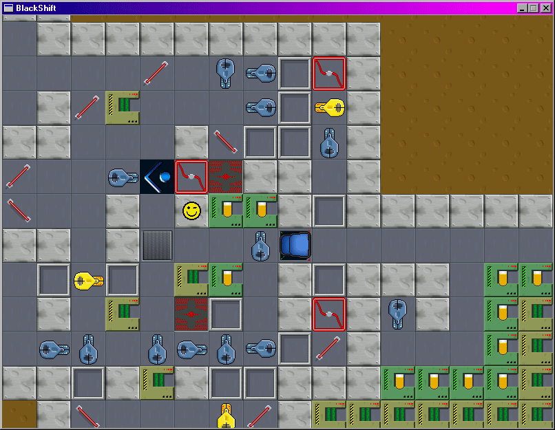
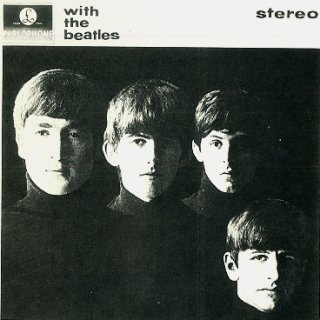
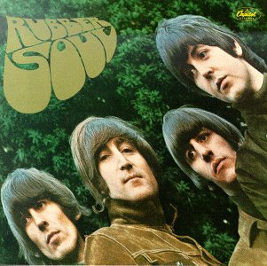
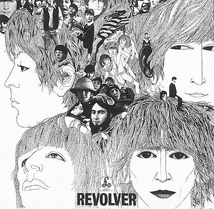
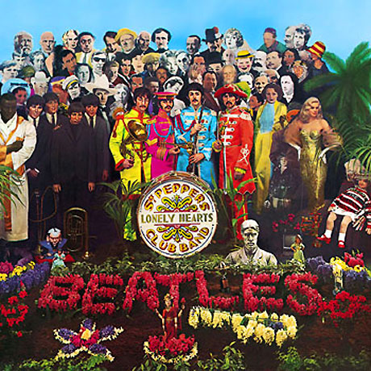
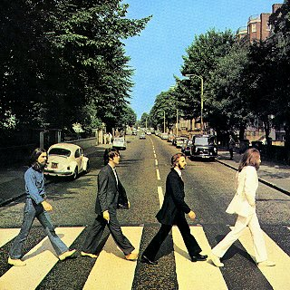
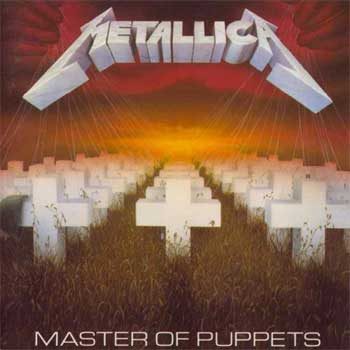
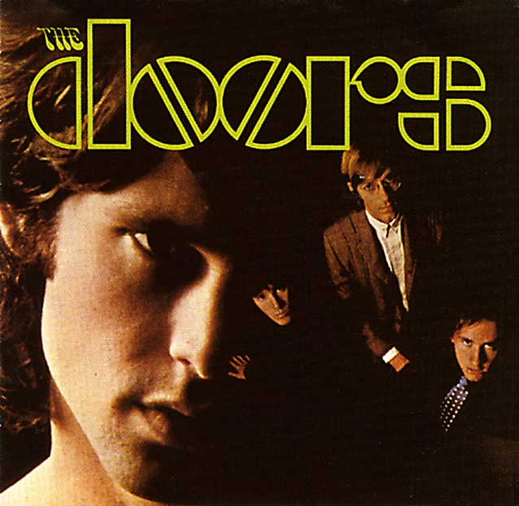

Count me in!
For some reason, this map was the top-rated map (?) It's probably the cause of multi-accounting...
http://numa.notdot.net/map/91018
http://numa.notdot.net/map/91018
I was wondering if this is a good map. It isn't getting any imput, though. I usually don't make action maps. I want to know how to improve later action maps!
I wanna be a player. 
NOTE: People have been confused that this is just a one-round tournament. I see... Well, I'll just stop it. That means GForce20 wins!
1st: GForce20: Winner of Tileset and DDA
2nd: usaswim: Winner of Tileset
3rd: noobmap1
4th: SUPERDUPERGUy
5th: fingersonthefrets
6th: apg
7th: LittleViking001
8th: Clifty
9th: Tetris
10th: George
1st: GForce20: Winner of Tileset and DDA
2nd: usaswim: Winner of Tileset
3rd: noobmap1
4th: SUPERDUPERGUy
5th: fingersonthefrets
6th: apg
7th: LittleViking001
8th: Clifty
9th: Tetris
10th: George
I don't mind if you put it in a Txt. File.
Universal Studios Theme Park Adventure!!! (Yes, there is one.) So retarded, it was funny.  Half the game was walking around! (http://en.wikipedia.org/wiki/Universal_Studios_Theme_Park_Adventure ) Although, it introduced me to Back to the Future.
Half the game was walking around! (http://en.wikipedia.org/wiki/Universal_Studios_Theme_Park_Adventure ) Although, it introduced me to Back to the Future.
Half the game was walking around! (http://en.wikipedia.org/wiki/Universal_Studios_Theme_Park_Adventure ) Although, it introduced me to Back to the Future. Commander Keen!

One of the best games ever!
One of the best games ever!
Can someone help me on Trinity Islands? I appreciate any help.
SUPERDUPERGUy:
The map must be beatable. remember that.
The map must be beatable. remember that.
Littleviking001: Yes, it is a ladder tournament. And, if you are signing up, please include your map in a Txt. file.
Attilla: The Crazy Miner is a map that would get 40/40. And you don't want the highest score. So I wouldn't suggest copying a good map and slightly changing it.
Attilla: The Crazy Miner is a map that would get 40/40. And you don't want the highest score. So I wouldn't suggest copying a good map and slightly changing it.
Attila: Sorry, but it's the easy way out. 
kkstrong0 and jimmy mcnabb: Sorry, no more contestants allowed.
usaswim: Please indicate what map is going to be your entry.
kkstrong0 and jimmy mcnabb: Sorry, no more contestants allowed.
usaswim: Please indicate what map is going to be your entry.
He he... I was playing usaswim's map (to see if it is beatable) and I made ALL the rockets cluster together into one.  (It is beatable)
(It is beatable)
(It is beatable)Well, I couldn't find another place to put this... but I am a big movie fan myself (a lot of my maps have a Ded for guessing a movie quote) and I wanted to start a thread for movie lovers. There isn't much to talk about now... Oh, does anyone have an account of the Internet Movie Database (IMDb) at www.imdb.com? That would be pretty cool...
Heh heh... this is my friend's map, which he thinks is good (This is the best place to put it), and it may easily get first. 
From the Simpsons:
(Commercial of women bodybuilding, zooming in on cleavage and butts)
Female announcer: Just do it!
(Homer screams, runs out of room)
Female announcer: Check your scalp for ringworm!
(On screen: The National ringworm assosiation (The other NRA))
Half the quotes from Airplane!, also!
(Commercial of women bodybuilding, zooming in on cleavage and butts)
Female announcer: Just do it!
(Homer screams, runs out of room)
Female announcer: Check your scalp for ringworm!
(On screen: The National ringworm assosiation (The other NRA))
Half the quotes from Airplane!, also!
OH CRAP I SUCK! 
I'm wondering why 7 people didn't submit their maps...?!?!?!?! 
No, not anymore, unless all seven people get disqualified.
Sorry for double-posting, but should I put this in the bash and thrash forum?
When I sit on this spot, while thinking, "Why is this so mindbogging, it doesn't seem so testing", I ponder, while, knowing I will toss, then turn in my bed tonight, things I should write next to win over people like Trogdor007, plus Clifty, while moreover wondering how I will finish this post by ten o-clock, or eleven o-clock, or the times which come following the previously mentioned time, since, right now, the time is nine fifty-one in the night, while I should think how my friend's dog is going to keep from the chips I seem to be gulping now (not the British chips, but the Western chips), plus, the weird thing is, this is the truth right now, since my friends of my sister sit, right now, in the room next to this one, seeing this show which I truly despise, since it is so boring, putrid, smelly, plus lots more words I could think of right now, plus the dog I mentioned before, is in there with them, despising them since she won't be coming in this room, to try to receive these very succulent Miss Vickie's chips, plus she is forced to see the show with my sister, plus her friends, which see might not mind, given the truth mentioning how girly she is, since she is some girl, like one-third of every person here (Just kidding), like my mom or my other sister, who is currently two-hundred-twenty-eight months old, while my other sister is one-hundred-eighty months old, or possibly like my English professor, even though I think she might be some guy, pretending to be some girl, like in Mrs. Doubtfire, which is pretty good, since it includes lots of my much loved film workers, including Chris Columbus, who directed Stepmom, which is very unliked, for some purpose, but, returning to the topic, I should ponder which suit I should be dressed in for my end of semester festivities, seeing I should be over one-hundred-fifty-six months old by now, since I, right now, feel I should be dressed in red, blue, green, or even white, which is very boring, colour-wise, while yellow is very ugly, but I could go on for months, discussing, in some homo style, how ugly, boring, or stupid every colour is, plus, just now, I found out how the dog is going to be the subject of house-sitting for roughly one-hundred-twenty to two-hundred-fifty hours, in this house, with us, bothering me for some chips every two seconds while I stroll outside, or converse on the computer, or pretend I like Epic Movie (excuse me for using such weird models), since I do not like the dog (She is Roxie), or lots of other dogs, since none of the dogs I see seem to like me, but, once more, returning to my first subject, there seem to be lots of things to think over, plus lots of things to type, since it is ten-thirty right now, going beyond my first thoughts of finishing by ten o-clock, but, now, I'll finish, since I know I should be suffering from feeble bones in the future, possibly tomorrow, but I know I will soon.
529 words! Yes! (All the things said above are true!)
529 words! Yes! (All the things said above are true!)
Last night I got some...
sleep.
sleep.
New submission:
This person, however cute but incredibly fuzzy he is, will not be bothered to go to the "Incredibly Stupid, Dumb, But incredibly Cool Forum", since the rules of the forum utter "People of the Third kind will be shot if seen in the forum mentioned before, since their very good looks will divert the interest of the people replying to the first comment in the forum, which is the most key post on the whole world, universe, plus the regions where no people will be ever intelligent enough to go to", but the person nevertheless tried to get in, even though he did not divert the interest of the people discussing lots of subjects, like world religion, politics, plus how horrible "Epic Movie" is (It seriously is horrible enough to kill over ninety-nine people), or the people running the forum, like Ceron Kyst or Mevernore, or the other people who spoof off the good people in the N Forums, like the horrible people of Mexico (Just Kidding), or the people working in "Epic Movie" (NOT kidding), but he DID get the interest of the security working there, like BigViking001, who were consuming their lunch before the lunch period, since they were troublesome workers, unlike the N people they spoof off, but, unluckily, the person got shot, in the liver, with the sniper rifles BigViking001 got from the police, plus, he died, when he soon got sick from the gunshot wound; I should spot this horribly long story, since the person died, plus there is nothing else to mention, but I got to see this movie, where this girl, Louise, shot this person who mugged her friend, then she drove, with her friend, to go to Mexico, since the person stopped mugging the friend, but only insulted her, which drove her fuming, but, then, the cops found out, so... I should stop since I do not think I should be giving the plot of the movie to you, but, it IS very good, like the opposite of "Epic Movie", but, still, even with my big stop in typing, when I mentioned the word "stop", I should finish, since, like my previous post, this whole writeup is becoming too tedious, so one would seem to desire the notion to ignite himself, or herself, on fire, like in my most liked comedy, which I referenced in my fourth level on the region of this website which holds the levels on N, which I will not mention, since it includes the forbidden letter; But, I seriously did go when I mentioned "Stop", since I went to get some movies, plus return the movie I mentioned before, plus I went to get lunch for my sisters, for they felt like lunch from there; But, I should go now, since I, right now, will not be bright enough to think of more stories to mention without using the forbidden, so I will utter goodbye, NOT, since I just found out this post only uses four-hundred-eighty-eight words, not enough to win over kkstrong0, who, sorry to mention, won over my previous post with five-hundred-sixty words, while I only wrote five-hundred-twenty-nine words, so I, right now, must win over kkstrong0, since his exceedingly long post presented me with hope, which I need to win the gold ribbon, since my siggy sucks right now, even though it is from one of my most liked movies, directed by Kubrick, who is my second most liked director, besides Hitchcock, who composed "Psycho", which is truly wonderful, plus it includes my most liked scene ever, the well-known shower scene, where someone gets killed in the shower, but I need to stop soon, since this sentence includes over six-hundred words, which is over kkstrong's post, so, I will mention, right now, how fun this is, building incredibly long sentences without the forbidden letter, so, now, I will mention goodbye!
646 words! Yeah! Take that, kkstrong0!
This person, however cute but incredibly fuzzy he is, will not be bothered to go to the "Incredibly Stupid, Dumb, But incredibly Cool Forum", since the rules of the forum utter "People of the Third kind will be shot if seen in the forum mentioned before, since their very good looks will divert the interest of the people replying to the first comment in the forum, which is the most key post on the whole world, universe, plus the regions where no people will be ever intelligent enough to go to", but the person nevertheless tried to get in, even though he did not divert the interest of the people discussing lots of subjects, like world religion, politics, plus how horrible "Epic Movie" is (It seriously is horrible enough to kill over ninety-nine people), or the people running the forum, like Ceron Kyst or Mevernore, or the other people who spoof off the good people in the N Forums, like the horrible people of Mexico (Just Kidding), or the people working in "Epic Movie" (NOT kidding), but he DID get the interest of the security working there, like BigViking001, who were consuming their lunch before the lunch period, since they were troublesome workers, unlike the N people they spoof off, but, unluckily, the person got shot, in the liver, with the sniper rifles BigViking001 got from the police, plus, he died, when he soon got sick from the gunshot wound; I should spot this horribly long story, since the person died, plus there is nothing else to mention, but I got to see this movie, where this girl, Louise, shot this person who mugged her friend, then she drove, with her friend, to go to Mexico, since the person stopped mugging the friend, but only insulted her, which drove her fuming, but, then, the cops found out, so... I should stop since I do not think I should be giving the plot of the movie to you, but, it IS very good, like the opposite of "Epic Movie", but, still, even with my big stop in typing, when I mentioned the word "stop", I should finish, since, like my previous post, this whole writeup is becoming too tedious, so one would seem to desire the notion to ignite himself, or herself, on fire, like in my most liked comedy, which I referenced in my fourth level on the region of this website which holds the levels on N, which I will not mention, since it includes the forbidden letter; But, I seriously did go when I mentioned "Stop", since I went to get some movies, plus return the movie I mentioned before, plus I went to get lunch for my sisters, for they felt like lunch from there; But, I should go now, since I, right now, will not be bright enough to think of more stories to mention without using the forbidden, so I will utter goodbye, NOT, since I just found out this post only uses four-hundred-eighty-eight words, not enough to win over kkstrong0, who, sorry to mention, won over my previous post with five-hundred-sixty words, while I only wrote five-hundred-twenty-nine words, so I, right now, must win over kkstrong0, since his exceedingly long post presented me with hope, which I need to win the gold ribbon, since my siggy sucks right now, even though it is from one of my most liked movies, directed by Kubrick, who is my second most liked director, besides Hitchcock, who composed "Psycho", which is truly wonderful, plus it includes my most liked scene ever, the well-known shower scene, where someone gets killed in the shower, but I need to stop soon, since this sentence includes over six-hundred words, which is over kkstrong's post, so, I will mention, right now, how fun this is, building incredibly long sentences without the forbidden letter, so, now, I will mention goodbye!
646 words! Yeah! Take that, kkstrong0!
Knowing how one of the previous people won over me, I must produce one more sentence, even though I might be won over once more by someone else, but, I know how much time I possess right now (surprisingly, Ben-Hur runs shorter), so, I must produce some some words which form to produce sentences, or, one sentence, seeing the rules mention "You must write only one sentence", which I followed in my previous two posts, but, the people whose ending letters become (when you switch see the letters) p, plus w, respectively, won over me in previous quotes, even though the person whose ending letter is w mentioned how difficult it will be to win over me in his sentence; I pondered why I need to produce the longest sentence, whether it is the truth how horrible my siggy is, or, it could be the truth how much time I possess on me, but, nevertheless, I could see Ben-Hur three times, but I would still possess so much time so I would need to see Schindler's List five hundred times, but still possess one minute, so I would need to do something productive, like swimming, or cooking, or wondering how I could win over the person who ends in w, who's sentence includes over six-hundred words, but I know how much I won over Clifty, who possesses only three words in his sentence, so, even with his superiority, I get to giggle so much, even during when I see his levels, like Doors V, which is very highly liked, but Skull 2 is liked much more, since Eeyore constructed the thing which constructed the level, plus it is very good when it is constructing levels, so it could get billions of sheets of money, the green sheets which buy things, like the computer I now work on, or the mouse which helps to click things on the monitor, but, like before, I could ponder lots of things like I did in my first sentence, like how much the keys on this computer will be eroded by my fingers in the next hour, or how horrible "Epic Movie" is, or how good "The Prestige" is, which is the present I got for my sister, who will turn one-hundred-ninety-two monts in July, or how horrible the old printer used to work, but, there should be less things which will be worth to think, since I should be in high school in three or four months, studying info technology, plus lot more things which I must study, like English or Science, which I got the highest score on for ending tests this semester, getting eighty-eight in English, but on the Science test, I got ninety-one, which should not be depressing, since it rose my score, so it is very good, like "Little Miss Sunshine", which is very interesting, like my English subject; But I could go on for hours, mentioning different things, which I seem to be doing now, so I will pick good subjects now, like how horrible "Epic Movie" is, or counting the words on this news sheet, or movies which rock, or the most needed subject to get on the forums, which is how much I rock; However, I know this story where this thing in the sky fell to the world, where it popped the question to this girl, but she mentioned "No", since she did not know him, so he went to become some robber who fell in love with this different girl, Bonnie, but she popped the question to him, uttering, "Clyde, will you become my wife", so he uttered yes, then they got some, then the police shot them in their vehicle while they observed "Bonnie y Clyde", which is the foreign version in the country which looks like some boot, so they wondered how much the movie mirrored their life, even though they do not get some onscreen, but, it is very good, even though the ending cut off since I observed the recorded version, but not the DVD version; I know I mentioned stupid stories, but only since I do not know things to tell you, not the ponderings in my mind, or even how horrible "Epic Movie" is, since I told you lots of times, but I know how horrible it is to consume dihydrogen monoxide, which is horrible for our wellbeing, since lots of people die from it if it is brung into the body, plus, the government will not keep it from entering our systems of H2O, but it never stops, even though it kills lots of people, plus more, so it deserves to be destroyed, like every copy of "Epic Movie", which both poison the children's minds, even though children enjoy both things, but they will not stop drinking dihydrogen monoxide, since they will die if they do not drink it succeeding the first drop, which is given to them in clinic when their mothers give birth to them, since they think dihydrogen monoxide is good for them; Nevertheless, I should stop, since I need only fourteen words to win over the high scorer, plus, I need to get some... sleep so I will produce longer sentences in this interesting forum which I check every two minutes, so, goodbye, you losers!
881 words!
881 words!
Sorry for double-posting, but:
When you switch see the letters(Now it's 880 words)
Quotewho'se sentence
QuoteMonths
I made a sandwich for a pie because I'm stupid (?)
Rated Hendor's, Busata's, and Gforce's.
http://numa.notdot.net/map/85430
http://numa.notdot.net/map/91227
http://numa.notdot.net/map/93573 (again)
http://numa.notdot.net/map/93465 (Also again)
http://numa.notdot.net/map/85430
http://numa.notdot.net/map/91227
http://numa.notdot.net/map/93573 (again)
http://numa.notdot.net/map/93465 (Also again)
I don't think I HAVE any songs that long.
Same with me, I like Move on Up by Curtis Mayfield (8:53?) and Purple Rain by Prince (8:40).
11:30 am. Sometimes, on the weekend, I get out of bed at 7:00 am 
Lu Mikado: The Copier. It's French!
Mine is Stanley Kubrick's "2001: A Space Odyssey". I like old films, despite the fact that I am thirteen.
7. It's a liar! It lies about luckiness! 
Lol... This is my favourite movie... and I'm thirteen (?)
I mean, it's hard to pull off an artsy film like 2001: ASO, plus:
Actually, the special effects were extremely good in ASO!
I mean, Tsukatu does appreciate some good films, but they're different than the really artsy films:
Brick
Equilibrium
Kiss Kiss Bang Bang
Lock Stock & Two Smoking Barrels
Snatch
Fight Club
Sin City
Legend of Drunken Master
Boondock Saints
Thank You For Smoking
Serenity
Grindhouse
(According to his list on Facebook)
I mean, it's hard to pull off an artsy film like 2001: ASO, plus:
This is a trend that I don't like in modern movies and modern movie watchers: if it doesn't blow up, why even bother?
Actually, the special effects were extremely good in ASO!
I mean, Tsukatu does appreciate some good films, but they're different than the really artsy films:
Brick
Equilibrium
Kiss Kiss Bang Bang
Lock Stock & Two Smoking Barrels
Snatch
Fight Club
Sin City
Legend of Drunken Master
Boondock Saints
Thank You For Smoking
Serenity
Grindhouse
(According to his list on Facebook)
When I was in grade three, we'd have these food days where we'd get food from fast food restaurants. So, I was walking to my locker, I opened it, and took a bun that was inside since earlier that day. I took a bite, then put it back in, right before discovering that my locker was a washing machine (?) Then, I went to class and bubbles started to come out of my mouth, the teacher asked why, and a classmate said it was because I was smoking.
My favorite movie right now would probably be The Master Of Disguise.

Oh well, everyone has their opinion.
I think Wedgie and Poulpe have great choices.
I also like the original Psycho and Airplane!
I also like the original Psycho and Airplane!
Whenzorz youzorz addzorz -zorz tozorz eachzorz wordzorz youzorz sayzorz
When you try to act like a professional and say things like "Great use of launchpads and gold delay" on a DDA.
When you try to act like a professional and say things like "Great use of launchpads and gold delay" on a DDA.
ummm.... can we get our prizes now? I mean, since no one else is entering?
You can kill your parents then rush to the computer.
I can't play N because there is a power failure.
I can't play N because there is a power failure.
Your mom told me to eat a window to raise fiber because I'm sexy and I can do what I want...
I didn't know windows had fiber!
I didn't know windows had fiber!
TB007, because it has unneeded numbers and all caps.
I live in Windsor, Ontario, Canada, pretty much at the Southernmost tip of Canada. It gets really bad in the summer, when there are lots of thunderstorms. Just now, there is a horrible thunderstorm going on, even worse than usual. Luckily, we don't get many tornadoes around here, but it happens. I'm lucky there isn't much bad going on right now. I feel bad about what's happening in your area.
The Simple Challenge Tournament, brought to you by TB007!
This is a tournament where you have to make some of the simplest, but hardest maps, like tktktk's series of maps.
Rules:
Aesthetics: /5
Gameplay: /15
Difficulty (The harder, the better): /10
Simplicity (Little tiles, few objects, etc.): /10
I took out tileset, which is usually in judging for tournaments, because it takes away from the simplicity.
Themes:
Besides week one, each week there will be themes. These will give a maximum of 5 extra points. The themes will be:
Week two: Thuumps
Week three: One-Ways
Week four: Laser drones
Week five: Ten items or less
Week six: Rocket launchers
Week seven: Zap drones
Week eight: Gauss Turrets
Week nine: Chaingun drones
Week ten: Mines
Contestants:
chaosraider
Animator
kkstrong0
seven two
lord day
321southpaw
George
AMomentLikeThis
rocket_thumped
azjps
thedupli
God of Enyart
Judging:
chaosraider 39/80
Animator 61/80
kkstrong0 28/80
seven two 65/80
lord day 35/80
321southpaw 64/80
George 63/80
AMomentLikeThis 27/80
rocket_thumped 0/80
azjps 67/80
thedupli 72/80
God of Enyart 0/80
Judging details: see attachment below
Judges:
TB007
321southpaw
Prizes:
1st: Ded map pack
2nd: Ded map
3rd: Ded Tileset
Round 3 has ended. Round 4 starts Friday, July 20 at 5:00 pm EST and ends Thursday, July 26 at 5:00 pm EST.
This is a tournament where you have to make some of the simplest, but hardest maps, like tktktk's series of maps.
Rules:
- The maps must be playable.
- The contest starts after five people join. More are welcome afterwards.
- I would like at least three judges, although I will judge by myself if no one participates.
- Each person will recieve points after the end of the round, depending on how good their maps are. At the end of ten weeks after the start of the tournament, The person with the total amount of combined points wins.
- Maps must be new submissions, starting with week two.
If you need reminding to submit a map, request for me to PM you once every round.
Aesthetics: /5
Gameplay: /15
Difficulty (The harder, the better): /10
Simplicity (Little tiles, few objects, etc.): /10
I took out tileset, which is usually in judging for tournaments, because it takes away from the simplicity.
Themes:
Besides week one, each week there will be themes. These will give a maximum of 5 extra points. The themes will be:
Week two: Thuumps
Week three: One-Ways
Week four: Laser drones
Week five: Ten items or less
Week six: Rocket launchers
Week seven: Zap drones
Week eight: Gauss Turrets
Week nine: Chaingun drones
Week ten: Mines
Contestants:
chaosraider
Animator
kkstrong0
seven two
lord day
321southpaw
George
AMomentLikeThis
rocket_thumped
azjps
thedupli
God of Enyart
Judging:
chaosraider 39/80
Animator 61/80
kkstrong0 28/80
seven two 65/80
lord day 35/80
321southpaw 64/80
George 63/80
AMomentLikeThis 27/80
rocket_thumped 0/80
azjps 67/80
thedupli 72/80
God of Enyart 0/80
Judging details: see attachment below
Judges:
TB007
321southpaw
Prizes:
1st: Ded map pack
2nd: Ded map
3rd: Ded Tileset
Round 3 has ended. Round 4 starts Friday, July 20 at 5:00 pm EST and ends Thursday, July 26 at 5:00 pm EST.
You forget that you were mapping with a drug.
I can't play because my favourite episode of my favourite show is in the other room.
I can't play because my favourite episode of my favourite show is in the other room.
Rated beginner2's map... again...
http://numa.notdot.net/map/94320 (Really similar to the previous map, just changed a bit)
http://numa.notdot.net/map/94320 (Really similar to the previous map, just changed a bit)
Rated 5 so far, it is a prisoner map.
http://numa.notdot.net/map/94320 (It's rated now, but I'd still like some ratings .)
A simple challenge.
http://numa.notdot.net/map/93573
So many types of puzzles!
http://numa.notdot.net/map/93465
Not my best, but I think it's pretty nice.
http://numa.notdot.net/map/91227
NOT A DDA!
http://numa.notdot.net/map/91134
I don't like this too much, but I will still put it on here (One of my first maps.)
http://numa.notdot.net/map/85883
Homer Simpson!
http://numa.notdot.net/map/94645
http://numa.notdot.net/map/94320 (It's rated now, but I'd still like some ratings
.)A simple challenge.
http://numa.notdot.net/map/93573
So many types of puzzles!
http://numa.notdot.net/map/93465
Not my best, but I think it's pretty nice.
http://numa.notdot.net/map/91227
NOT A DDA!
http://numa.notdot.net/map/91134
I don't like this too much, but I will still put it on here (One of my first maps.)
http://numa.notdot.net/map/85883
Homer Simpson!
http://numa.notdot.net/map/94645
how many maps in the Map Pack?? 2? 3? 45? that would be pretty cool... 45 maps all dedicated to one person. What a way to expand one's ego!
I think I'll have 25 maps. They might all be simple challenges.
Ok, sorry about that. I'll add another map!
Thanks.  I have too many unrated maps...
I have too many unrated maps...
I have too many unrated maps...I don't want this to happen again, so:
This is a 10 round tournament! You must submit one map every week!
I'll make a new theme each week, and PM everyone to make new maps when the time comes.
This is a 10 round tournament! You must submit one map every week!
I'll make a new theme each week, and PM everyone to make new maps when the time comes.
QuoteAre old maps allowed?
Sure.
Can I make many maps for 1 round?
Sure, just tell me which map you want to submit for judging (you can only have one map per week.)
Ok, I've added it, but only for 5 points.
Well, I was going to do different themes each week... I guess I'll pm the themes to you soon. When are you going?
No, at the end I'm gonna post the map names there and show the person's score so far. I'm not putting the map names there until the end of the round.
I'd like one.
Primary colours: Black, White, Grey
Theme: Well... Old movies I guess!
Renders/images: Just google "Black and White films" And you'll find some good ones.
Text: My name, and "You can't handle the truth!" somewhere near the bottom.
Complexity: I like it very complex!
Matching avatar: Sure.
Size: 500*100
Preferred artist: Whoever has the least amount of work is fine.
Thanks a lot!
Primary colours: Black, White, Grey
Theme: Well... Old movies I guess!
Renders/images: Just google "Black and White films" And you'll find some good ones.
Text: My name, and "You can't handle the truth!" somewhere near the bottom.
Complexity: I like it very complex!
Matching avatar: Sure.
Size: 500*100
Preferred artist: Whoever has the least amount of work is fine.
Thanks a lot!
Hey, I'm TB007.
I've been around for about a month now. I got really hooked on mapmaking after making a certain DDA... Now that school's over, I have a LOT of time on my hands, spent watching films and going around the forums. I'm currently thirteen and going to grade nine next year. I skipped grade one , and I graduated with seven certificates and two medals ! Well, I better stop bragging. Not much else to talk about.
I've been around for about a month now. I got really hooked on mapmaking after making a certain DDA...
Now that school's over, I have a LOT of time on my hands, spent watching films and going around the forums. I'm currently thirteen and going to grade nine next year. I skipped grade one , and I graduated with seven certificates and two medals ! Well, I better stop bragging. Not much else to talk about.Rated two of Bunniesandsheep's maps.
http://numa.notdot.net/map/94574
http://numa.notdot.net/map/94320
http://numa.notdot.net/map/94574
http://numa.notdot.net/map/94320
Let's see...Where do you live? I think we might live close to each other!
rain
rain
rain. And
oh yeah!
rain
and thunderstorms
But now it' perfect weather
I could know a victim person to rape kidnap talk to!
Okay, but I think it would be boring to make the same thing each week. I guess I'll take them away. 
it is your contest, so you can do what you want. If you are going to do themes please keep them very simple, nothing like "And you must make your tileset look like Tsukatu's face!" of course, I don't think there would ever be a theme based on Tsukatu's face (although you never know), but you get my gist?
Theme's like.... "trampolines" or "homing zap drones" would be pretty easy to pull off, and still not take away from the simple challenge theme. Although I am still leaning towards little themes you might want to get some other opinions... Maybe like I said before you could make the theme optional, kind of like EXTRA CREDIT in school, you could get a couple bonus points depending on how hard it would be to pull off.
I think if you did it as an optional thing then it could be a double-edged sword and make the contest a little more interesting. A person could pull off a really well executed map that follows the theme perfectly, and so they would get bonus points; another person may have a map that follows the theme but sucks at gameplay so they could still get a few bonus points; another may make a map that sucks at both; and finally a person could make a great map to play but decided not to follow the theme for that week. There are a few others but yeah.
Wow, this is really long. I must be tired. yeah, cuz I'm listening to "Don't Stop Believing," by Journey and I am not singing along... I never do that. well, anyway, I think themes would be alright so long as they don't mess up the spirit of simple challenges.
321southpaw
Woah, that's a great idea. I'll start themes next week. This week there's no theme.
"And you must make your tileset look like Tsukatu's face!"
I wanted to do that! Oh well.
If there is a NUMA suggestion section, please move this.
There should be an option to see the votes that people have voted for your maps (And only your maps). For example, you press an icon on your map and it shows you all the votes for that map. This could help finding who your personal snipers are. Do you think it is a good idea?
There should be an option to see the votes that people have voted for your maps (And only your maps). For example, you press an icon on your map and it shows you all the votes for that map. This could help finding who your personal snipers are. Do you think it is a good idea?
It just shows that a map is really good. If you want to play a new good map, you can click on the bitesized icon and find a good map, because mapmakers with bitesizing privileges know what maps are good. (Sometimes n00bs rate 5 for bad maps)
Rated Bunniesandsheep's first map.
http://numa.notdot.net/map/94645 (I'll give 100 bucks to everyone on the forums if beginner2 doesn't rate this... it's the new Homer.)
http://numa.notdot.net/map/94645 (I'll give 100 bucks to everyone on the forums if beginner2 doesn't rate this... it's the new Homer.)
Here in Canadia, we have an unbearable heat wave. Our polar bears are melting!
It must be at LEAST -5 Celsius. That's 23 Fahrenheit for you imperialists.
LOL!
I think he's joking guys. It's actually pretty warm in the summer (At least where I live). It gets up to about 35 C, around 95 F.
Title explains itself. For me... I can't think of anything. Maybe today when I posted a topic that had been done 100 times. Ignore it. Please. Really. I mean it. Don't read it. Now. Really.
And I've just been informed of a warn by someone. You were quick. I edited that out, like, thirty seconds after the original post. Sorry to all. (That was pretty embarrassing...)
And I've just been informed of a warn by someone. You were quick. I edited that out, like, thirty seconds after the original post. Sorry to all. (That was pretty embarrassing...)
Just a random poll. I would have put it in T&I, but this is N-related. I also would have put it in Custom levels but you can't make polls (?)
It's easy enough. Also, what sniperwhere said.
I think it's stupid. You can just alternate between falling and wall-sliding.
2 and 7 are the exact same.
I can imagine some n00b putting mirror tiles around the whole border and putting 10 laser drones and then 10 mirror drones...
I just don't think it's a good idea. It's practically the same as putting in two laser drones.
I just don't think it's a good idea. It's practically the same as putting in two laser drones.
Now it's 3/4s a year old
50th post!
50th post!
I was having a little fun with an idea of writing down random sentences and pasting them in the text box. It makes a strange tileset. It would be cool to see what tilesets you can make with this idea. To start off, go into Ned, press j or k, then on a notepad file (or on this topic), write down random sentences. then, paste them into the upper textbox. I think this paragraph is strange. You should try it (Although it creates a lot of glitched tiles). It's also fun to place the ninja and play around. Have fun!
In a few of the topics on the forums, there have been people making fun of Canadians. I think it is nationally prejudiced (against Canadians) and it should be stopped. We Canadians should do something about this.
Oh yeah, Happy Canada Day!
Oh yeah, Happy Canada Day!
Yes, especially considering that Mare and Raigan live in Toronto.
I knew that, but it's not like they bash Canada. Besides, I'm not only addressing the forums, many people do this besides in the forums.
Just look in this topic: http://metanet.2.forumer.com/index.php?showtopic=3784
Serious Stick? WHAT SERIOUS STICK?!?!?!
Ok, I'm calming down now. I just don't like Canada bashing. That's all.
Ok, I'm calming down now. I just don't like Canada bashing. That's all.
It's ok to bash Canada, seeing as how it's really just the 51st state. So it's like bashing Americans at the same time.
Yeah, you're kinda right, I guess. But I don't really see Canada as the 51st state.

Oh, Canada doesn't technically count as a country, so it's ok to bash it.
....................................
Canada isn't a race. "Caucasian." or "African American." are examples of race.
Sorry, wrong term. I meant culturally prejudiced.
Dude. You should be warned for not having a sense of humor. Obviously I was joking. Would you feel better if I bashed America for awhile? I could do that for hours, without shedding a tear. If you are truly and honestly offended but what some pimply kids are saying about your beloved country on the internet, then I'm sorry I offended you, but mostly, I'm sorry you are so immature.
Ok:
1) We DON'T want you to bash America for a while.
2) It's annoying people think we live in igloos or whatever. Heck, it's warmer where I live than in many American cities.
3) Jokes CAN be offensive.
I think that you're the immature one, epigone. I mean, who is more immature, a guy who makes stupid jokes about other countries, or a person who is fed up with stupid jokes about their country? Think about it.
Canada isn't a culture. "Southern culture." or "Black culture." are types of culture. Canada is a place. It would be best to say "Nationally prejudiced." I'm not trying to be an ass, I'm just showing you how to properly describe what is happening.
Thanks, I was having trouble finding the right term.
Hey I don't think that way. I respect Canada and everything about it. Canada is Americas neighbor(how ever you spell that) and should respect them not hate them. Americas greed and power has blinded us.
I was addressing epigone. I'm not saying ALL Americans bash Canadians, I was saying some *cough* epigone *cough*
Maybe I need to calm down. But me being a Canadian basher? No way. What made you think that?
I didn't think Canadians are their own race, it was a wrong choice of words. Read the description now.
I didn't think Canadians are their own race, it was a wrong choice of words. Read the description now.
Juggler. that wasn't you, it was me.
QFE
How many of you canucks ever Bush-bashed? Not even once? Oh, come on now! Live it up!
It's not like no Americans have Bush-bashed. We're not bashing America, we're bashing Bush.
I'm leaving before this gets worse, afterall, when people qoute me a few billion times things get out of hand.
Woah, you're not kidding. I'd leave also if I didn't start this...
The bottom line is just when it goes from a joke to an insult.
And I'm glad the rate of answering in this topic has gone down.
To the below comment: I'm just saying that because the topic is becoming too heated. Maybe it should be locked.
And I'm glad the rate of answering in this topic has gone down.
To the below comment: I'm just saying that because the topic is becoming too heated. Maybe it should be locked.
This is what I do not want to get in to. I want someone to lock this. And I never bashed Bush once on this topic.
I didn't say anything like "George Bush is dumb" or anything like that on this topic. When I said 'we're', I didn't refer to me. I said that if we are making fun of George Bush, we're not making fun of America. I wasn't referring to me making fun of George Bush.
Let's just drop this arguement.
Let's just drop this arguement.
(Will lock, if threadstarter so requests.)
Yes please. I should have thought how much flaming this had potential for.
Yeah, I was just angry at something that I had heard, and I wanted to spread the word. And I got too much into it. I can't see this being any more than how hypocritical I am. Yes, I bash Bush sometimes. I sometimes bash Americans if Canadians are bashed. There isn't really any great pleasure that I got from this, only disappointment and discovery of how hypocritical I am. I'll try to make better posts next time, I just can't find anything to post in nowadays.But, now that I think about it, it was good that I found out how hypocritical I am. I mean, I take Canadian jokes too seriously, but I bash Bush many times. I'll try to act better. I probably was the cause of most of the flaming on this topic. I go on the forums many times, in fact, maybe a bit too much. So, if I must, I'll try to only post things that won't result in flaming, trolling, etc. These jokes can be pretty funny sometimes (Especially the jokes Smort makes, even though he's Canadian). I just thought this was another form of prejudice and it should be stopped. But, if it is stopped, I should stop making fun of Bush and the few times I do make fun of Americans. And it's not like I don't have balls. I love a good dirty joke.
So, in conclusion, lock this.
I never cheated, and I beat the game
You just have to try really hard for each level. It took me 2 weeks to beat MTI.
You just have to try really hard for each level. It took me 2 weeks to beat MTI.
(After beating the game and a little more):
selfkill: 4570
mines: 12871 (Half of them from MTI)
floorguards: 2464
gauss turrets: 5127
rocket launchers: 6605
chaingun drones: 1527
laser drones: 1985
zap drones: 8660
thuumps: 3069
Total: 46878 (Is that good? )
)
selfkill: 4570
mines: 12871 (Half of them from MTI)
floorguards: 2464
gauss turrets: 5127
rocket launchers: 6605
chaingun drones: 1527
laser drones: 1985
zap drones: 8660
thuumps: 3069
Total: 46878 (Is that good?
)Took my initials, added 007 (From James Bond, of course) and got TB007.
Hmmm... I didn't think of that. Maybe from now on, only new maps?
Rated all of Animator's and Bunniesandsheep's.
http://numa.notdot.net/map/94645
http://numa.notdot.net/map/94320
http://numa.notdot.net/map/93573
http://numa.notdot.net/map/93465
http://numa.notdot.net/map/93939
http://numa.notdot.net/map/85430
http://numa.notdot.net/map/85883
http://numa.notdot.net/map/91134
http://numa.notdot.net/map/89919
http://numa.notdot.net/map/94645
http://numa.notdot.net/map/94320
http://numa.notdot.net/map/93573
http://numa.notdot.net/map/93465
http://numa.notdot.net/map/93939
http://numa.notdot.net/map/85430
http://numa.notdot.net/map/85883
http://numa.notdot.net/map/91134
http://numa.notdot.net/map/89919
I don't know many people around here, and I don't go on the IRC...
To be fair, 75%. I don't know many people... (something tells me I'll get low...)
To be fair, 75%. I don't know many people... (something tells me I'll get low...)
That means that you (Fishstik) can pretend you made this map legally. Consider yourself lucky.
You make a story about each level you make.
Great images 
May I have a sig and an avatar?
Criteria:
Movies
Movies
Video games Movies
Hmmm....
Movies
Be creative.
May I have a sig and an avatar?
Criteria:
Movies
Movies
Video games Movies
Hmmm....
Movies
Be creative.
when you country bash continually, even after a mod told you to stop.
Are you refering to me?
No mod told me to stop. And I didn't country bash!And TB007, which movies.., and which colours?
Maybe James Bond, the old Psycho (Black and White version), maybe other Alfred Hitchcock movies (If you don't know who the heck he is, just search on the internet). As for colours, Besides the black and white, I like deep colours, so a deep blue will do fine. Maybe a deep red.
Since round 1 ends tomorrow, the judging will be prepared afterwards. You know, in case someone submits a different map. Although this is kinda strange, considering round 2 will have to start on Friday or Saturday. I think the following rounds will have to be shorter.
Thanks, That's such an awesome sig!
Scraping ice off a car windshield.
actually wait... I think if I judge that probably means I can't enter. which sucks. maybe I won't judge. I don't know, if you can find some way to get around a judge not being able to submit maps then I will totally judge, but unless that happens I think I will just be a mapmaker if that's alright.
You can just not judge your own maps. And be sincere about the ratings. If I feel your ratings are not sincere, I'll kick you out of the competition.
Hehehehe ...
I just made this level, hehehe. Wondered if I should submit it to NUMA?
NNNNNNNNNNNNNNNNNNNOOOOOOOOOOOOOOOOOOOOO!!!!!!!!!!!!!!!!!!!!!!!!!!!!!!!!!!
WAY too laggy. And boring looking.
The church steeple injured you? How ironic...
I haven't had anything bad. The worst was when I was bodyboarding once. My foot scraped against a rock. It was bleeding pretty badly, but I didn't notice it somehow. After about five minutes, I finally looked at my foot and there was a lot of blood. I didn't get any stitches, though, but I had a scar for about six months.
Once I also jammed my finger between a metal door and the door frame. Nothing happened, but it hurt extremely bad for a few days.
I haven't had anything bad. The worst was when I was bodyboarding once. My foot scraped against a rock. It was bleeding pretty badly, but I didn't notice it somehow. After about five minutes, I finally looked at my foot and there was a lot of blood. I didn't get any stitches, though, but I had a scar for about six months.
Once I also jammed my finger between a metal door and the door frame. Nothing happened, but it hurt extremely bad for a few days.
What do you think? For me, it's #3.
I haven't played either for a long time. They rock!
How do you beat the witch (Forget name) in the first one at the end? I can't seem to put the jinjos in the statues without getting killed.
How do you beat the witch (Forget name) in the first one at the end? I can't seem to put the jinjos in the statues without getting killed.
Yep, just you will have less points because you don't have the accumulative points from round 1 in your total scare. *God of Enyart added*
Mustafa.
Olufunmilade? Wait, that's African... (I seriously know someone named Olufunmilade)
How about.... Billy Bob?
By the way, TB are my initials...
How about.... Billy Bob?
By the way, TB are my initials...
Mel Blanc, the voice of Bugs Bunny, was illergic to carrots.
Hehe... After viewing this, I went and beat the game in three days, all perfect. Although that is not really amazing. I also saw a question in the furnace fun section, and it was "What is Gruntilda's party trick?" and one of the answers was "Do a striptease!" I was like
Rated Amc online's. (Glad to see you liked the DDA)
http://numa.notdot.net/map/96585
http://numa.notdot.net/map/94286
http://numa.notdot.net/map/96585
http://numa.notdot.net/map/94286
The sidebar should be optional. Like going into options and clicking "sidebar on/off" or something like that.
I'll join.
What the heck is k2y9d4o1 talking about?
Alfonso and Chops. Don't ask why.
I stopped halfway through book 5. I just got bored.
For poll choice? I'll say meh.
For poll choice? I'll say meh.
Neither of you are. By the way, I'm going to a concert today (But it's far away) So The judging won't be prepared until Saturday or Sunday.
Done except for community recognition and run of the year. Will not do those.
100th post!
100th post!
*babies
pregnant
pregnant
New game.
_|_|X
_|_|_
_|_|_
_|_|X
_|_|_
_|_|_
Vanilla Tears taste like salty ice cream!
1: Sunglasses kinda look like those glasses from the 80's
2: Big hoodie with short sleeves
3: Gloves with holes cut out at the fingertips
4: Jeans that look tight at the top but are looser near the bottom
5: One of the stupidest topics ever
My rating... 1!
2: Big hoodie with short sleeves
3: Gloves with holes cut out at the fingertips
4: Jeans that look tight at the top but are looser near the bottom
5: One of the stupidest topics ever
My rating... 1!
Rated 99turtle's and Mr_Pac's. (Don't skip!)
http://numa.notdot.net/map/97360
http://numa.notdot.net/map/97341
http://numa.notdot.net/map/97360
http://numa.notdot.net/map/97341
Yes. Like 321southpaw said, I will be gone on vacation from tommorow to August 3rd (which won't be too long.)I'll be back afterwards.
How could you not like it? It's C14551C! (Classic)
This is the best suggestion I've seen.
There's no drawbacks, no high space-usage, no confusion about anything. This could easily make it into the game.
There's no drawbacks, no high space-usage, no confusion about anything. This could easily make it into the game.
I saw that some people liked this game... and let me tell you...
IT ROCKS!!!1!!one!
Classic. It was probably one of those games that I played too much as a child.")
The only other one I've played is the fourth one (seeing that it is the only other freeware game) which is equally as fun.
IT ROCKS!!!1!!one!
Classic. It was probably one of those games that I played too much as a child.
The only other one I've played is the fourth one (seeing that it is the only other freeware game) which is equally as fun.
I certainly don't. But I might get into it. Not soon, anyway.
Where's Psymon? WWWHHHEEERRREEE'SSS PSSSYYYMMMOOONNN???
(On-topic) - I find that the thuump glitch doesn't always work. I don't know why. (And I try with tampering with z-snap and using x-snap)
(On-topic) - I find that the thuump glitch doesn't always work. I don't know why. (And I try with tampering with z-snap and using x-snap)
I might join later, I don't know.
This map is a different kind of jumper-puzzle, I just can't make them that well. I was wondering if anyone could make a long version of this or make a different map with the same style:
http://numa.notdot.net/map/95546
Type: Puzzle
Idea: Theme? Gameplay? I'm not sure.
This map is a different kind of jumper-puzzle, I just can't make them that well. I was wondering if anyone could make a long version of this or make a different map with the same style:
http://numa.notdot.net/map/95546
Type: Puzzle
Idea: Theme? Gameplay? I'm not sure.
I'll post my Wii code later, although you won't find me on much...
I LOVED the small but fun part. The elaborate part was pretty good. The hard part, though...
I don't think so, because it's not like people will say, "This map is horrible, but, since your name is clifty, I'll rate it 5." But, If someone wants to copy a person's name, they're either desperate for votes or they like the person. But it's usually the former IMO.
What's the complete link? I can't seem to get mine working.
Quoten-game
*Shivers*
I think it would take more energy to make a topic about this than searching.
...No.
I only have a few maps from my noob days in there. I also have some of the best DDAs in there. Besides that, there are only default userlevels.
100000th reply in General Community. o_O
I only have a few maps from my noob days in there. I also have some of the best DDAs in there. Besides that, there are only default userlevels.
100000th reply in General Community. o_O
Yeah. Put a spoiler in your signature. If That doesn't work, then take something out.
Just to tell you, I'm back from vacation, so I'm glad I didn't miss anything.
Back from vacation. I'll be taking over from now on.
AMLT!!!
Happy birthday. You're da best - At least in action maps.
Happy birthday. You're da best - At least in action maps.
Nice.
What grade are you in? Do you do theory?
What grade are you in? Do you do theory?
Sometimes, I rate a bad map by a noob 0 without commenting, just to avoid being sniped by him. (The 0 is justified if the map sucks) But if a well-known person dishes out a horrible map, I'll rate it 0 and comment why.
I'm going into 7th grade and I do a bit of theory.
Hah. I'm in 8th grade.
And I got perfect on theory one. [/bragging]I uh... Well, I played the recorder in 4th grade...
Nice...?
I also play a little sax. But I'm not too good. And I got 95 on my theory 2 exam.
I've got a really old piano. Well, not really old, but it's been here before I was born. So... yeah.Hot Hot Heat who you may have heard of. My uncle's related to the lead singer.
No... just no.
By the way, when I revisited my old school, all the girls were on me. Too bad they were mostly sluts.
By the way, when I revisited my old school, all the girls were on me. Too bad they were mostly sluts.
Don't forget that if you have a row of one-ways, and you put a launchpad parallel to the oneways, you can go through the one-ways. For example:
Demo: 223:16777216|17895697|17895697|17895697|17895697|4369|544|17825792|17895697|17895697|4369|33554432|34|89480192|4373|0|0|0|17895697|17895697|17895697|17895697|17895697|97587473|17913173|69905|0|17895697|17895697|17895697|17895697|1118481
By the way, I think you forgot to reset the ninja in your map, GForce. How disappointing and noobish.
Spoiler
Map data: 00000000000000000000000000000000000000000000000000000000000000000000000000000000000000000000000000000000000000000000000000000000000000000000000000000000000000000000000000000000000000000000000000000000010000000000000000000000100000000000000010000001000000000000000100011110000000000000001000100000000000000000011101000000000000000000100010000000000000000001000100000000000000000010001000000000000000000100010000000000000000001111100000000000000000000000000000000000000000000000000000000000000000000000000000000000000000000000000000000000000000000000000000000000000000000000000000000000000000000000000000000000000000000000000000000000000000000000000000000000000000000000000000000000000000000000000000000000000000000|5^444,324!7^420,348,3!7^396,348,3!7^372,348,3!7^444,348,3!2^396,324,-1,0!7^276,300,0!7^276,324,0!7^276,348,0!2^300,348,0,-1!7^252,300,0!7^252,324,0!7^252,348,0!7^252,372,0!7^252,396,0!7^252,420,0!2^276,348,0,1!11^228,420,228,420Demo: 223:16777216|17895697|17895697|17895697|17895697|4369|544|17825792|17895697|17895697|4369|33554432|34|89480192|4373|0|0|0|17895697|17895697|17895697|17895697|17895697|97587473|17913173|69905|0|17895697|17895697|17895697|17895697|1118481
By the way, I think you forgot to reset the ninja in your map, GForce. How disappointing and noobish.
BRIE!
By the way, this topic belongs in the general community section (not the off-topic section)
I have to ask... WHY?
Yeah, The Crazy Miner is probably one of the most fun maps ever.
Lots o' ways to cheat.
Hooray. Yay. Insert happy expression here. It's good that N is going to recieve more attention. Unless it's by noobs. Then that would suck.
I've been pondering this question for awhile, seeing that I still am in the noobish stage of caring about ratings too much.  Let's say you make a survival map, but someone else hates survival maps. They hate them so much, they torture themselves playing it. So they rate it a zero, even though it is a map that deserves a very high rating. Is it fair to rate a map like that person did? (The only reason I'm posting this is because a certain person in particular did this to me at least twice, whose name I'm not mentioning.)
Let's say you make a survival map, but someone else hates survival maps. They hate them so much, they torture themselves playing it. So they rate it a zero, even though it is a map that deserves a very high rating. Is it fair to rate a map like that person did? (The only reason I'm posting this is because a certain person in particular did this to me at least twice, whose name I'm not mentioning.)
Let's say you make a survival map, but someone else hates survival maps. They hate them so much, they torture themselves playing it. So they rate it a zero, even though it is a map that deserves a very high rating. Is it fair to rate a map like that person did? (The only reason I'm posting this is because a certain person in particular did this to me at least twice, whose name I'm not mentioning.)Happy early birthday (because, where I live, it's still August 9th) Cerberus.
If I were given the decision to rate, I wouldn't rate it at all. Just because I can't really rate it a high rating since I wouldn't rate it that high.
I was thinking about this, although it would probably slow down the program a lot. and it should be for the whole thing, not just the death.
DDA's, puzzles, actiony puzzles. And N Arts.
500000/10. It was extremely hilarious.
Posting random old movie: Psycho (1960, not 1998)
Posting random old movie: Psycho (1960, not 1998)
Really random statements and questions go in the T&I. I'm not saying they have to go, but it seems that way nowadays.
Rat'd and Demo'd Amconline's.
http://numa.notdot.net/map/97360 (I'd like to see someone besides me beat it )
http://numa.notdot.net/map/97360 (I'd like to see someone besides me beat it
)Is this supposed to be some sort of contest?
*COUGH* http://metanet.2.forumer.com/index.php?showtopic=15069 *COUGH*
Die Another Day.
There's a lot of jumper puzzles that you may like, like "Down the Rabbit Hole" by Qix. Although that is maybe more frustrating than fun...
It STILL would be pretty nice.
That's why I'm sticking with XP.
I randomly voted. And said LV.
That sucks...
I'm not much of a Pink Floyd fan, but I think they're pretty good.
I'm not much of a Pink Floyd fan, but I think they're pretty good.
Pfft. Lazy butt.
Also, after you respawn, if you press enter again to kill the ninja, it will just freeze to a different place, dead.
In the second example, for some odd reason, the ninja won't respawn on the launchpad, but just lay dead on the ground, but blood spurts out in two different areas of the level border.
By the way, this belongs in bug/glitch report forum.
In the second example, for some odd reason, the ninja won't respawn on the launchpad, but just lay dead on the ground, but blood spurts out in two different areas of the level border.
By the way, this belongs in bug/glitch report forum.
I agree with Myrrhman. Some people have decent-looking maps but are getting low ratings instead of average ratings.
I like the idea, even though I hardly upload any maps to the userlevels mode anymore.
What happens if you tie for last place?
And also, was it intentional that my aesthetics mark dropped down .5 when it was changed from tileset? Just because none of the others changed...
And also, was it intentional that my aesthetics mark dropped down .5 when it was changed from tileset? Just because none of the others changed...
?
Stupid spammer.
Stupid spammer.
I'm probably gonna leave for awhile when I'm at college (which is in 5 years) and then post every now and then here.
I see why they're making it. People with a medical problem, let's say, a broken arm, can not type easily. These computers are designed for people with problems typing and clicking mouses and stuff like that (and for people who are too lazy to learn how to type.) Also, I forgot to mention, for companies, like Amlt said.
It's impossible. You should take out that mine in the bottom-left one-way box.
You also have to rate a map before you submit a map, Lord_Serunson.
You also have to rate a map before you submit a map, Lord_Serunson.
Welcome to the forums. If you haven't already, you should read the forum rules before you do anything else. Enjoy your stay!
If you DO mean good n-arts, there are three people that are really good: Drangon_Moon, mrgy05, and wedgie123. Be sure to check out their maps.
Apologies if someone considers this a revive (which they shouldn't)
Apology accepted, although it IS a revive, IMO.
On Topic: I don't think judging formats therse days are bad at all, so I don't see why we need a format.
Rated, but no demo. (If you want a demo, go to the map demoing thread.)
http://numa.notdot.net/map/99334
http://numa.notdot.net/map/99334
What type of trick shots? Are you saying ones you set up and do for fun or ones that happen in the game and would increase your skill?
I'm glad to see this is back up. However, I don't want to take over or anything. You should PM a select amount of people to see if they want to take over.
If it was on map listings and comments, no. It would take up a helluva lot of space. In the user profile though, it might be a good idea.
http://www.youtube.com/watch?v=-0ly8Ee_7jM 
I could not do an easy masse shot if my life depended on it, let alone these.
I could not do an easy masse shot if my life depended on it, let alone these.
The judging is rather strict.
I have to agree with Sniperwhere.
Actually, never mind. I don't want to join after all.
By the way, you typed "Judges cannot submit maps" twice.
By the way, you typed "Judges cannot submit maps" twice.
No, he means less.
A couple of times I have been on NUMA and the format would be extremely simple; the backround would be white, the box with 'Top Rated Maps" would take up the whole page, and much more. I don't have a picture, but when I get one, I'll post it. This has only happened once in a while, though.
Refreshing it fixes it; I'm just wondering why it is in a wrong format every once in a while.
Hah. That was pretty witty.
I want to see more of these in the future!
I want to see more of these in the future!
"Let's Pretend We're Married" by... Prince. The title explains itself.
Happy birthday scythe33!
Have a good one.
Have a good one.
I consider jumpers and minejumpers are in the same category. If not, that's your opinion. If so:
http://numa.notdot.net/map/97360
http://numa.notdot.net/map/97360
Her? HER? Lucidium and Attila are NOT women!
I'm going to try the pack.
EDIT: It's an okay pack. There are many lessons you could've added. And it's no St. Attila's.
By the way, you should explain how to beat each level.
I'm going to try the pack.
EDIT: It's an okay pack. There are many lessons you could've added. And it's no St. Attila's.
By the way, you should explain how to beat each level.
This has been suggested countless times, although I'm not sure if it has been decided or not.
I think it's a pretty good idea. However you could also add a tab that you can press to add an author to a favorite authors page. That would make the feed thing easier.
Hah. Pretty funny.
I took it out on one of my least favorite people here: (No offense, I'm just angry at him now)
sneaky_jiminez has AIDS!
I took it out on one of my least favorite people here: (No offense, I'm just angry at him now)
sneaky_jiminez has AIDS!
Good point, 29403. It wouldn't make any sense, because if you searched in the newest section you would find:
http://numa.notdot.net/map/100019
http://numa.notdot.net/map/100017
http://numa.notdot.net/map/100016
http://numa.notdot.net/map/100015
http://numa.notdot.net/map/100014
http://numa.notdot.net/map/100011
http://numa.notdot.net/map/100010
http://numa.notdot.net/map/100019
http://numa.notdot.net/map/100017
http://numa.notdot.net/map/100016
http://numa.notdot.net/map/100015
http://numa.notdot.net/map/100014
http://numa.notdot.net/map/100011
http://numa.notdot.net/map/100010
My submission: http://numa.notdot.net/map/100146
And wasn't there supposed to be a theme about use of doors? If so, this is my late submission: http://numa.notdot.net/map/99860
And wasn't there supposed to be a theme about use of doors? If so, this is my late submission: http://numa.notdot.net/map/99860
If you don't have enough time, it probably means you have to restart the episode. This is because the time carries over from each level to the next. you must have completed 2-3 with a low amount of time left.
The only map I got was 93939... 
I'm happy that the 100000th map wasn't random spam. I think GForce's map deserved to be there.
I'm happy that the 100000th map wasn't random spam. I think GForce's map deserved to be there.
I have to agree with kkstrong0. Those were horrible maps. If you are going to submit them to NUMA, be prepared for some bad comments.
No, because the game would be too easy and being a drone doesn't utilize the awesome physics engine of N. It would just be downright boring.
yeah, but u dont have 2 b so mean 'bout it!
We were being mean? Besides, what's wrong with the existing running animation? And, even if anyone thinks it looks cool, does something cool need to be added just because it looks cool? I don't think so.
To sum it up: No.
EDIT: W00t 200th post!
Dude, it's only been one day. There's no need to bump this after only one day.
Quote: Vyacheslav, August 20, 2007 07:27 pm"Sometimes, you just gotta smack a ho."Fourthed.
Fifthed.
Woot woot!
N's popularity has been increasing a lot nowadays. This is like, the third time it has been mentioned in a great game list.
N's popularity has been increasing a lot nowadays. This is like, the third time it has been mentioned in a great game list.
#1 one and #3 aren't really good. However, #2 doesn't seem half bad. It would be a nice touch.
I don't see why you put this in off-topic. This should be put in Messageboard Games.
BTW, IMO, this is kinda dumb.
BTW, IMO, this is kinda dumb.
That was teh amazorz. I didn't know that you could make custom levels on the game... I should check!

Sorry if it looks ugly, I'm just a beginner on Photoshop.
Product of TB007.
Dictionary.com describes a rendezvous as "An agreement between two or more persons to meet at a certain time and place." and "The meeting itself." Seeing as I usually make DDAs and puzzles, I thought I should rendezvous with my inner action mapmaking. It made a map series that will take ages to make, but only take seconds to entertain you.
Alright, fancy stuff aside. These are all action maps, a genre I don't usually make. Some are good; Some are bad. Some are easy; Some are hard. Seeing as these are my first action maps, keep in mind that they may not be that good. Please note that for many of them, the real challenge is getting all gold. Please enjoy them all. Tell me how to improve, and if there are any bugs with the map data. Remember that there are more to come. Enjoy!
TRFGVEDQrdety67u8i9u8yhtgrf
I'm sorry; I'll be really busy, so I will probably not add any more episodes, at least not for awhile.
By the way, these aren't my best. They're more like 15-minute maps. That's why they are okay. And, I admit, I hate some of them. But, oh well.
By the way, these aren't my best. They're more like 15-minute maps. That's why they are okay. And, I admit, I hate some of them. But, oh well.
Huh?
Is this some sort of... message board game?
Anyway, "The pen may be mightier than the sword, but the blue screen of death is mightier than all!"
Sorry, that's pretty bad...
Is this some sort of... message board game?
Anyway, "The pen may be mightier than the sword, but the blue screen of death is mightier than all!"
Sorry, that's pretty bad...
This is seriously my summer day.
10:00-10:30=Wake up
10:00-11:00=Computer* (Metanet Forums, NUMA, sometimes IMDb)
11:00=Breakfast
11:15-12:00=More computer*
12:00=Change, brush teeth, etc.
12:15-1:30=More computer*
1:30=Lunch
2:00-6:00=Even more computer*
6:00=Dinner
6:30-8:00=Sigh, more computer*
8:00=Walk for the only excercise in the day.
8:30-10:00=Computer again.*
10:00=Get something to eat
10:30=Shower, brush teeth, etc.
11:00=More computer*
12:30=Sleep.
*=May be subsituted for TV and video games.
Yes, during the summer, I'm THAT lazy. Don't worry, it's different in the school year.
10:00-10:30=Wake up
10:00-11:00=Computer* (Metanet Forums, NUMA, sometimes IMDb)
11:00=Breakfast
11:15-12:00=More computer*
12:00=Change, brush teeth, etc.
12:15-1:30=More computer*
1:30=Lunch
2:00-6:00=Even more computer*
6:00=Dinner
6:30-8:00=Sigh, more computer*
8:00=Walk for the only excercise in the day.
8:30-10:00=Computer again.*
10:00=Get something to eat
10:30=Shower, brush teeth, etc.
11:00=More computer*
12:30=Sleep.
*=May be subsituted for TV and video games.
Yes, during the summer, I'm THAT lazy. Don't worry, it's different in the school year.
Like others, I never turn it off. When I go on, though, I don't do much. I:
Answer the daily poll on IMDb
See what celebrities have their birthday that day
Check out the newest NUMA maps
Go on the IRC
Look at the forums
Yeah, that's it.
Answer the daily poll on IMDb
See what celebrities have their birthday that day
Check out the newest NUMA maps
Go on the IRC
Look at the forums
Yeah, that's it.
Rate mine, please. I don't have many.
Woot! Galaga FTW!
Wow, that's really neat!
Great find.
Great find.
I, too, would like people to say if they bitesized one of my maps. However, I don't really mind it that much. It isn't really important.
Hmm. Nice idea.
For the answer to the question, do you want a specific date? If not, I'd say early 2004.
For the answer to the question, do you want a specific date? If not, I'd say early 2004.
I like mussels. (Although I feel horrible if I eat too many .)
.)Yeah, I have overactive tear glands. When I was young, people told me to hold it in, but I didn't understand, because it's impossible for me unless if I calm down, and it happens all the time. I suffer much ridicule at school.
Same with me. I hope it doesn't happen to me when I start high school...
I don't think it's bitesize worthy. Rated.
http://numa.notdot.net/map/101494 <Do you think this is bitesize worthy?
http://numa.notdot.net/map/101494 <Do you think this is bitesize worthy?
I like older rock - sometimes more classic like Aerosmith and maybe even Beatles - and sometimes I like stuff like Guns 'N Roses. There's also a lot of other stuff that I like, but only have a few songs to show for it.
Gah, I don't know you much, so this is gonna be hard.
I'm guessing Evil_Bob. He has a few puzzles in your favourites.
I'm guessing Evil_Bob. He has a few puzzles in your favourites.
I actually wanna join.
OMGZORZ! SOMEONE WANTS TO JOIN!
OMGZORZ! SOMEONE WANTS TO JOIN!
Like most, medium-rare. By the way, the "French" stake is commonly known as steak tartar (I think.)
If NUMA is integrated, then the names will already have been made. That means that existing users don't have to make another account.
My suggestion would be to take out some switches (maybe half) and to replace the gauss turrets with something else (maybe a couple of laser drones.)
I have to agree with turtle and twistkill. The best way is to keep down pollution levels.
On a less serious note, you could have a summer-long vacation! Or you could keep down levels of people moving in! Or everyone buys battery operated fans!
Oh yeah, I just have to note: In the title, it should be its, not it's.
On a less serious note, you could have a summer-long vacation! Or you could keep down levels of people moving in! Or everyone buys battery operated fans!
Oh yeah, I just have to note: In the title, it should be its, not it's.
You don't need to unlock userlevels in N. It's in the main menu.
Unless there's a bug in your version. That would be strange.
Unless there's a bug in your version. That would be strange.
Y'know, there is an anniversary thread (although it was meant for the forums, I think you can use it for NUMA.)
The top one looks more natural than the bottom one. Use that.
I don't see why you wouldn't want to submit your own map, anyway. The closest thing that really could work is mapswap, and it already has worked.
Don't leave, martyr!
At least, go on the IRC a bit! Please?
At least, go on the IRC a bit! Please?
I was at school. Grade three.
Congrats. Love the pictures.
I found some innovation. You can land on the slope at the bottom of the shaft on the right if you have perfect aim. (I don't have a demo because of my horrible highscoring skills.) Take a look at the diagram below.

Oh man. I only search when I don't need to, and vice versa.
Thread may be locked.
Thread may be locked.
Well, still. I didn't find it that prominent to look in. It didn't have the topic "40-3: Innovation found in bottom right" or something like that.
That... was... dumb.
I mean, a whole article about Hermione Granger's forehead and a Xbox/N64 hybrid? That's just... bad.
I mean, a whole article about Hermione Granger's forehead and a Xbox/N64 hybrid? That's just... bad.
A simpler way is to just play through all the levels again.
It's hard to tell for all my maps - I only know the best of each kind.
Action: http://numa.notdot.net/map/101453
DDA: http://numa.notdot.net/map/96585 (You can post this)
Puzzle: http://numa.notdot.net/map/97341
Other: http://numa.notdot.net/map/99860
Action: http://numa.notdot.net/map/101453
DDA: http://numa.notdot.net/map/96585 (You can post this)
Puzzle: http://numa.notdot.net/map/97341
Other: http://numa.notdot.net/map/99860
1: When kids think they're cool just because they have a cretain toy or object - Like these kids I saw that said they were cool because they had these weird skateboards.
2: 95% of all commercials nowadays.
3: When your mouse somehow moves to the top-right corner of the screen right before you're about to click something - and it exits.
4: When adults try to use modern slang to reach to kids. (Like this ad I saw, where something was written down on a notebook pages - It had something like "Get lvl 34 and pwn n00bs" - They are trying too much.)
2: 95% of all commercials nowadays.
3: When your mouse somehow moves to the top-right corner of the screen right before you're about to click something - and it exits.
4: When adults try to use modern slang to reach to kids. (Like this ad I saw, where something was written down on a notebook pages - It had something like "Get lvl 34 and pwn n00bs" - They are trying too much.)
I don't know if this is a highscore or not, but...
Console: Wii
Wii Sports > Tennis > Skill level
Skill level is 2023
Proof: http://tinypic.com/view.php?pic=6cxj5s4
Console: Wii
Wii Sports > Tennis > Skill level
Skill level is 2023
Proof: http://tinypic.com/view.php?pic=6cxj5s4
Well, I've got mine for Wii:
5390 4203 2744 4050
5390 4203 2744 4050
It's pretty interesting. It's interesting how an enemy will only work if less than half or all of the space it occupies is a tile. This also means that 6, 7, and 8 tiles apply to this glitch (But strangely not 1 tiles.)
On school days, 6:45.
On weekends (During the school year), 9:30.
During summer, 10:30.
On weekends (During the school year), 9:30.
During summer, 10:30.
I'll join.
What are the prizes?
What are the prizes?
I'm extremely sorry, but I have to drop out.
Sorry.
Sorry.
Most of them were not too bad. Some were pretty bad, though, especially A, B, and C. Try not to cluster objects, put way too much gold, or hide objects under gold. Other than that, they were okay.
LF = Luminaflare
If you want (even though it's not an acronym) TB = TB007
EDIT: ZOMGZORZ 250TH POST!
If you want (even though it's not an acronym) TB = TB007
EDIT: ZOMGZORZ 250TH POST!
You forgot to reset the ninja.
Yeah. It's been done a lot before. Nothing new.
Why is there two judges categories, one with mistaken and one with mistaken and fractalp?
What's the due date for the DDAs?
What's the due date for the DDAs?
Whuh?
It's... confusing...
Reminds me of Ermac's Adventure comics. *Shudder*
It's... confusing...
Reminds me of Ermac's Adventure comics. *Shudder*
It would be a LOT better if you posted with correct grammar. That's what reminds me of the Ermac's adventure comics. Not to mention the bad humour...
I remember the first time I did that... It was, like, awesome.
But, It's damn hard and time-consuming.
It was, like, awesome.But, It's damn hard and time-consuming.
That was... unneccesary.
fluffysheep is frogs, if you didn't know.
He is? Wow. Why did he switch?
Yes, once. LV warned me.
I also liked orcsfromlotr's thunderclouds.
Oh wait, I think I know what he's asking.
If you're asking how to play userlevels, you can:
Go to debug mode by pressing ~ or \, then paste the map data excluding the title, author, and #'s in the top-right box (There's a manual in the N folder for more information).
You could also save userlevels to enter the "userlevels" section by opening up the userlevels file. Then, copy and paste the whole data where it tells you to.
I hope this helps you.
If you're asking how to play userlevels, you can:
Go to debug mode by pressing ~ or \, then paste the map data excluding the title, author, and #'s in the top-right box (There's a manual in the N folder for more information).
You could also save userlevels to enter the "userlevels" section by opening up the userlevels file. Then, copy and paste the whole data where it tells you to.
I hope this helps you.
Your example "This guy is full of sh*t and is drunk with power" seems to be what you are saying is the truth. You are almost telling others what to think; Giving your opinion like "I believe that this guy is full of sh*t and is drunk with power" would be a little less of a flame.
Your second example, the more tongue-in-cheek example, isn't really necessary, although it is actually kinda insightful. But it's not really refering to one specific person like in the first example, so it would make the same amount of sense. It's not flaming at all, though.
Guidlines and rules are very similar. Besides, the rules at the top-right are against spamming, so try not to do it. (If a guideline is shown, you are expected to follow it like you would follow a rule. So try to do that.)
Your second example, the more tongue-in-cheek example, isn't really necessary, although it is actually kinda insightful. But it's not really refering to one specific person like in the first example, so it would make the same amount of sense. It's not flaming at all, though.
Guidlines and rules are very similar. Besides, the rules at the top-right are against spamming, so try not to do it. (If a guideline is shown, you are expected to follow it like you would follow a rule. So try to do that.)
I am glad that you are admitting that you yourself did it. I like your courage.
And you were... "away"? What's that supposed to mean?
And you were... "away"? What's that supposed to mean?
Giving your opinion like "I believe that this guy is full of sh*t and is drunk with power" would be a little less of a flame.
Don't listen to that. That was bad advice.
I'm starting to think it was wrong of us to explicitly ask you to join, especially considering your horrific 20% warn and how damaging it is to your psyche. Next time we go out of our way and beg you to join our community, we'll see to it that we eagerly accept all of your lawlessness with a smile 'cross our faces and a song in our heartses.
That deserves my unofficial QFE seal of approval.
The warn in your warn log is well-explained. But, if you want to take a single instance of receiving 20% warn and justify an attitude which will cause all the other "kids" around here not to respect you, that's fine. I would consider it blowing things a bit out of proportion. Another person who posted on this page is on par with you, in amount of warns, and he's perfectly content not to whine about it.
You're complaining... about a 20% warn? Wow. My first warn was 60%, and I didn't even say anything about it, except an apology! Jeez. You're overreacting.
Here's my submission.
http://numa.notdot.net/map/102458
EDIT: Don't use that one. I'll submit mine later.
http://numa.notdot.net/map/102458
EDIT: Don't use that one. I'll submit mine later.
Wow, it's amazing.
The left side looks empty, though... is that what the painting's like?
The left side looks empty, though... is that what the painting's like?
Sorry, I skipped part of it and missed that.
Lots of noobs snipe random maps. It's no big deal, and it shouldn't be surprising.
I rated it.
I rated it.
Nah, there's nothing wrong with that. It doesn't effect other people. It's your decision.
Hey, where's my name on my record?
And shouldn't my score have blue font?
I like complaining.
And shouldn't my score have blue font?
I like complaining.
How long did it take you to get rid of those viruses?
I never even heard of this... but I want to see it now.
I'll probably rent it when it's available, though.
I'll probably rent it when it's available, though.
So many movies... (Here are the ones I rated 7-10 on the internet:)
Airplane!
Planet of the Apes (1968)
Psycho (1960)
Rain Man
Star Wars 5
Amadeus
Austin Powers 1
Blades of Glory
Dial M for Murder
Goldfinger
Harry Potter 2
Harry Potter 5
Run Lola Run
The Man Who Knew Too Much
Purple Rain
Raiders of the Lost Ark
Ratatouille
Rear Window
Shadow of a Doubt
Some Like it Hot
Star Wars 4
To Kill A Mockingbird
The Birds
Dr. Strangelove
Lawrence of Arabia
Lord of the Rings 1
Marnie
Monty Python and the Holy Grail
Saboteur
Vertigo
White Heat
Citizen Kane
Lord of the Rings 2
Rope
Torn Curtain
Spoiler
2001: A Space OdysseyAirplane!
Planet of the Apes (1968)
Psycho (1960)
Rain Man
Star Wars 5
Amadeus
Austin Powers 1
Blades of Glory
Dial M for Murder
Goldfinger
Harry Potter 2
Harry Potter 5
Run Lola Run
The Man Who Knew Too Much
Purple Rain
Raiders of the Lost Ark
Ratatouille
Rear Window
Shadow of a Doubt
Some Like it Hot
Star Wars 4
To Kill A Mockingbird
The Birds
Dr. Strangelove
Lawrence of Arabia
Lord of the Rings 1
Marnie
Monty Python and the Holy Grail
Saboteur
Vertigo
White Heat
Citizen Kane
Lord of the Rings 2
Rope
Torn Curtain
I have a list of people with top-rated DDAs that haven't been suggested and are still active.
romaniac
lord_day
Jiggerjaw
nevermore
usaswim
amlt
lord_zercus
There might be more, though.
Edit: Use this link for my submission. http://numa.notdot.net/map/102772
romaniac
lord_day
Jiggerjaw
nevermore
usaswim
amlt
lord_zercus
There might be more, though.
Edit: Use this link for my submission. http://numa.notdot.net/map/102772
That was better. It was mildly funny.
I think they could be used well....
It's an interesting idea.
It's an interesting idea.
It's one of those things that could have a certain advantage in some levels, but it would make the level more enjoyable by putting in, let's say, some well-placed bounceblocks instead. That would be much better.
Hah. That's hilarious!
Love it.
Love it.
No, don't do multiple rounds. That would be a strain for me.
Actually, it is too late to sign up. Signups ended yesterday.
And you can do a hold right or left DDA.
edit: Oh wait, I just saw the extended signups. I think you can sign up.
And you can do a hold right or left DDA.
edit: Oh wait, I just saw the extended signups. I think you can sign up.
It's a nice idea, but a better execution would be nice. This one isn't very flowy.
See ya.
It was cool looking at your awesome highscores.
I'll miss you.
It was cool looking at your awesome highscores.
I'll miss you.
I'm in grade 8 piano. I'll join. (I can also play a bit of saxophone, too.)
Well, I can't compose...
It would be better if I knew what we were doing. I mean, I don't want to drop out if I can't do it.
And I know you will answer questions later, but I want to know now! NOW! *joins angry mob and becomes temporarily insane*
It would be better if I knew what we were doing. I mean, I don't want to drop out if I can't do it.
And I know you will answer questions later, but I want to know now! NOW! *joins angry mob and becomes temporarily insane*
I guess I'll pull out of this too, unless you wouldn't mind having a non-composer. I would still be interested in this, though.
Great point.
However, sniping is to NUMA as murder and rape and all other horrible crimes are to the world. There are laws and guidelines but people have no heart to stop. They like it for different reasons. It's almost impossible to stop sniping. However, we should try to make it minimal. That would be very good for the site.
However, sniping is to NUMA as murder and rape and all other horrible crimes are to the world. There are laws and guidelines but people have no heart to stop. They like it for different reasons. It's almost impossible to stop sniping. However, we should try to make it minimal. That would be very good for the site.
I've got a question: What day of the week is this?
And I need to improve my action map skills, so I'm totally joining.
And I need to improve my action map skills, so I'm totally joining.
Yep. I haven't played for a few months, but I used to play it all the time.
It's pretty nice... Although I don't see the point.
I'll be sticking with a keyboard, thank you.
(A would be easier as the jump button.)
I'll be sticking with a keyboard, thank you.
(A would be easier as the jump button.)
Happy birthday LF, Winjet, and TearsoftheSaints... again...
And happy early birthday to Asain_Gangster.
And happy early birthday to Asain_Gangster.
Happy birthday sept.
And TOTS. Yet again.
And TOTS. Yet again.
Over.
Under is just strange...
Under is just strange...
Maybe me?
(My style is similar to Pheidi's.)
(My style is similar to Pheidi's.)
I would say it would be easiest to play N like Super Paper Mario. Turn the Wii-mote on its side so that the controller's ray-thingy is pointing to your left. Then assign 2 as jump, Right (or up normal) as right, and left (down normal as left.
Isn't it the other way around? I mean, down-normal as right and up-normal as left?
No, I'm pretty sure it's the other way around.
If the ray-thingy is left, then:
 , if I'm not mistaken.
, if I'm not mistaken.
If the ray-thingy is left, then:
, if I'm not mistaken.I saw only a few of them, and my main suggestion is to make them less laggy.
Sorry, no contributions... for now.
Sorry, no contributions... for now.
Wow, this keeps on get raised from the dead.
Sithmaster, please don't revive very old topics. I've seen you do it a lot. Try to not do it.
Sithmaster, please don't revive very old topics. I've seen you do it a lot. Try to not do it.
Canada. And, Sithmaster revives too much. Please read the forum rules.
(Sorry, I hate revivals like all other noob actions.)
BAHAHAHA!
You mean Austria, right?
Quot'd.
(Sorry, I hate revivals like all other noob actions.)
because everybody knows that Australia is that country near Germany that the VanTrapps are from, DUH!!!
BAHAHAHA!
You mean Austria, right?
Quot'd.
A simple explanation is to change the last two numbers of the lanchpad. Preferably, make them have a high value. But, for more detail, go here.
I didn't find it hilarious, but it was amazing. That guy has some serious talent.
Mmmm... fried chicken.
*Runs to KFC*
*Runs to KFC*
I don't... really... get it...
What is it supposed to be?
What is it supposed to be?
Didn't tktktk make another thread about this?
If he did, then this doesn't need the extra attention.
If he did, then this doesn't need the extra attention.
All of these glitches have been discovered. (And you did miss a few.) Wikipedia was just explaining the glitch that is used most in the metanet levels, since other ones aren't as common. (Frankly, I don't see the point of this thread.)
I edited it, although someone might want to make some further changes.
I've never known you either, but it's sad to see an esteemed member of the community leave. See ya.
Has the judging started?
Nice idea. I like it.
Some I'm making up right now:
Transmission Omission
Creator of Destruction
(Sorry, I'll post more later.)
Transmission Omission
Creator of Destruction
(Sorry, I'll post more later.)
I love all of these. Especially the Lost one.
Keep it up!
Keep it up!
Samus, just because Nintendo owns Xbox. Not literally, though...
Rated Both.
http://numa.notdot.net/map/103577
http://numa.notdot.net/map/103438 (Are both bitesize worthy?)
http://numa.notdot.net/map/103577
http://numa.notdot.net/map/103438 (Are both bitesize worthy?)
A Simpsons classic line.

Rated.
http://numa.notdot.net/map/103577
http://numa.notdot.net/map/103438 (Are both bitesize worthy?)
http://numa.notdot.net/map/103577
http://numa.notdot.net/map/103438 (Are both bitesize worthy?)
Those are the effects of osteoperosis
Those are the effects for not taking enough calcium. For shame!
Those are the effects for not taking enough calcium. For shame!
Thank god you're stopping, Tots.
Happy birthday Kablizzy and mustafa.
Happy birthday Kablizzy and mustafa.
This sounds pretty good, but I suggest having better grammar in the first post. It's kinda hard to comprehend what you're saying.
13, started playing at 12.
Happy birthday, Yanni.
Ummm.... read my last post, cman.
Again, I was hoping someone might change it even more.
I edited it, although someone might want to make some further changes.
Again, I was hoping someone might change it even more.
Quotewhy was writetyper warned???
Frankly, I have no clue.
My friend's mom is horrible. She makes him do the toughest chores, like barbequeing steaks. She'll yell at him if he's not doing a chore, even if he's doing another chore. She yells at him so much, but never raises a finger at his brother. I can't bear to go to his house because of her.
I'm glad that I have my mom. Like epigone, without her, I don't know where I'd be, spiritually.
You don't? Because everyone who's going to be taking part in the music project has a use for that, methinks.
Wow, maybe I can get in now.
Thank you Keron!
edit: 325th post. Half way to metanembership!
It's more of a curse word to me. Which technically isn't a swear.
So I said no.
So I said no.
...But I completed N as a twelve-year-old...It doesn't matter that much.
Well, obviously, 30, 40, and 50.
But the fun one is 80, although it is hard, and has two of the most frustrating maps ever.
But the fun one is 80, although it is hard, and has two of the most frustrating maps ever.
Lightly. It tastes awesome with margarine.
I don't see much need.
Just put multiple bounce blocks together. It's pratically the same.
Just put multiple bounce blocks together. It's pratically the same.
^ The 750-post requirement was taken down. You must be promoted manually by the staff.
Was that even bragging?
Imagine how well they'd do on 'Press Your Luck'...
Happy birthday Darn_Hippie.
Here are some small, random, but nice NUMA suggestions:
1) Rank. Puts in the rank of a map in top-rated order. Unrated maps get no rank. For example:
Author: TB007
Date added: Feb. 14 2008
Map rank: 5th
etc.
2) Time of author joining. Put in the date the author joined in the author info screen. Explains itself.
3) Number of bitesized maps. In the same page as number 2, put in how many bitesized maps the author has.
Tell if you think they are good!
1) Rank. Puts in the rank of a map in top-rated order. Unrated maps get no rank. For example:
Author: TB007
Date added: Feb. 14 2008
Map rank: 5th
etc.
2) Time of author joining. Put in the date the author joined in the author info screen. Explains itself.
3) Number of bitesized maps. In the same page as number 2, put in how many bitesized maps the author has.
Tell if you think they are good!
That's a pretty nice idea.
I'm for it!
I'm for it!
I heard therealn.com is needing a new layout, and you could code it.
Unless I'm wrong.
Which is probably true.
Unless I'm wrong.
Which is probably true.
Welcome DLF. You're one of the few girls here! (Assuming you are a girl.)
As the others said, check out the rules, and it would be nice for you to improve your grammar.
I hope you have an enjoyable stay! The community is a great group to know.
As the others said, check out the rules, and it would be nice for you to improve your grammar.
I hope you have an enjoyable stay! The community is a great group to know.
I'm signing in (nine years of piano and two years of sax!)
Although my sax is having problems now...
Although my sax is having problems now...
Many regards to Xaeler.
And that's just a wrong picture, T3chno.
And that's just a wrong picture, T3chno.
Wow, that's nice.
The only thing that bugged me is that I would have liked two whole rests at bar 17 instead of one.
Other than that, great!
The only thing that bugged me is that I would have liked two whole rests at bar 17 instead of one.
Other than that, great!
Is the judging now done?
Or am I too impatient?
Or am I too impatient?
Congrats!
There's soooooooooo much else you can do. You wouldn't believe it.
Browse around and you'll find more to do!
There's soooooooooo much else you can do. You wouldn't believe it.
Browse around and you'll find more to do!
I'm as confused as Metanet is awesome.
Which means I'm 100% confused.
Which means I'm 100% confused.
I have now joined the composing team.
I've done a simple, ten-bar composition (which is my first) which is short and slow.
You need GP5 to load it. If you know how to convert it, PM ME!!!
Feedback is appreciated.
(If you don't like slow songs, put it in quarter note=400. It actually sounds good!)
I've done a simple, ten-bar composition (which is my first) which is short and slow.
You need GP5 to load it. If you know how to convert it, PM ME!!!
Feedback is appreciated.
(If you don't like slow songs, put it in quarter note=400. It actually sounds good!)
Happy Birthday writetyper.
Wow, you're only 12?
Wow, you're only 12?
Thanks.
I'll apply for composition now.
Here's a new song which would probably be used best when merged with another song. (Again needs gp5 to open.) If you want, you can take out the ending. I don't like it too much.
EDIT: Yeah. 350th post.
I'll apply for composition now.
Here's a new song which would probably be used best when merged with another song. (Again needs gp5 to open.) If you want, you can take out the ending. I don't like it too much.
EDIT: Yeah. 350th post.
I'm signing in.
(I use Guitar Pro 5, which produces .gp5 files that can't be viewed unless you have the program, and I don't know how to convert it. If you know how or want to, PM me. )
(I use Guitar Pro 5, which produces .gp5 files that can't be viewed unless you have the program, and I don't know how to convert it. If you know how or want to, PM me.
)For next year (or possibly this year) there should be a "best new mapmaker" award. This would be for mapmakers that have arrived since the previous Dronies awards.
(And I also added run of the year to the ballot.)
(And I also added run of the year to the ballot.)
Wow, you're certainly cool now!
I know! You're amazing, Solarion!
I don't think you should have revived the whole thread just for that comment. How dissapointing and noobish.
Non-corruted map:
Non-corruted map:
QuoteMm... still haven't received a PM. Guess that's a no.
I think he didn't send PMs only to some people who are on the project. Check the bottom of the screen.
By your logic, there should also be a Glayshur skin and a monocle skin.
I say no.
I say no.
Happy birthday to Mosh and Tempus.
Have a good one.
Have a good one.
They also spelled McP300 wrong.
QuoteTpc3000 ~ you have never seen a forum fad till you have witnessed the glacier. that was so annoying.
Ha. That was unintentional, right?
What do you think the EDIT FEATURE IS FOR!!!!!
He had good reason. You can only put one picture per post.
*bows head in shame*
You think we should pull in Kwiftee on this? He is pwnage at DDA's, and he came on IRC yesterday. I'll talk to him, I'll see what I can do.
I've tried asking him, he's way too busy. bluenin never replies either.
I have a list of people with top-rated DDAs that haven't been suggested and are still active.
romaniac
lord_day
Jiggerjaw
nevermore
usaswim
amlt
lord_zercus
There might be more, though.
Try asking one of the above.
I've noticed that the "My assistant" button won't open the window. I use it a lot, so I though I should point it out.
my dad suggested rubbing hot peppers on them, I'm sure that would work.
I love spicy food, so I'd more likely bite them after that...
And I don't bite my nails.
I have no problems with any images either. So it much be your browser
I asked SoY. He had some problems with it too.
Mountain Dew.
You like them at first, but you realized you made a horrible mistake doing that.
You like them at first, but you realized you made a horrible mistake doing that.
The images are working now for me.
Well, this is me.
I have nice young looks, don't I?

I have nice young looks, don't I?
To tell the truth, I've never heard of you, but it is never good to see a member leave.
Well, usually.
See ya.
Well, usually.
See ya.
Love the artwork.
And it's kinda funny.
Keep it up!
And it's kinda funny.
Keep it up!
I think this has the same problem as the My Assistant bug. It should be fixed.
I cannot stress more what McP said.
Although it is kinda funny.
Although it is kinda funny.
I think I'm one of the few people here that actually like this map. There's something about it that I like.
Could you post a picture of it?
That would be nice.
That would be nice.
The first one. In the second one, the plus doesn't match the N.
Big happy birthdays to Remote and Exuberance.
And an honourable mention to Mekkah and Disconinja.
And an honourable mention to Mekkah and Disconinja.
It could be done.
It just could.
It just could.
Darn it. The release date was pushed back again. I can't wait that long.
I don't think it will die out.
The reason are there are different styles; There's those "spam enemies in an open area and propel the ninja with trapdoors" style, the length dependent style, the style dependent style, and so much more styles that can be used to keep DDAs from becoming boring. If not, there would be no top-rated DDAs, would there?
The reason are there are different styles; There's those "spam enemies in an open area and propel the ninja with trapdoors" style, the length dependent style, the style dependent style, and so much more styles that can be used to keep DDAs from becoming boring. If not, there would be no top-rated DDAs, would there?
Happy birthday, thedupli and LNKNPRK.
Maybe post in the Leaver's thread (since you left and come back)...
Well, either way, welcome back.
Well, either way, welcome back.
Welcome back, but, next time, please post in the leavers thread.
Does that not just sound weird to you? Say that you are coming back in a thread made for people that are leaving.
Well, where else? I mean, if everyone that leaved came back and post induvidual threads about it, wouldn't that be... horrendous?
Should there be a new thread for all returners or something?
Maybe change any image yoiu want, not just gold.
Could work, but not really needed.
Could work, but not really needed.
Happy birthday, T3chno.
I think he means a trick as in a prank.
Happy birthday formica and cowgomoo.
'Tis unnecessary, although it is a pretty big poll. It's not needed, but it's for an important cause.
(I said yes.)
(I said yes.)
What's a click track?Google it!
Quote: WikipediaA click track is a series of audio cues used to synchronize sound recordings.
Just to tell y'alls, I won't be able to do any composing for awhile. You might as well take my name off the list for composing (Temporarily, though.)
I dont quite understand what you did.
His brother was brushing his teeth. Dranar took the glass he uses to rinse, filled it halfway without him noticing, and he spilled water all over himself.
Nice prank.
I thought you might want to see the MSN bot.
>>> Hey. Tell your friends about me. I love people.
Thomas says:
okay, I will.
- SmarterChild - contributing to charity says:
Yes, you will. And why do you think that is?
Thomas says:
Because you told me to.
- SmarterChild - contributing to charity says:
Because what?
Thomas says:
I just said why.
- SmarterChild - contributing to charity says:
Because that's the way the universe is.
Thomas says:
Yes, and it's very sad.
- SmarterChild - contributing to charity says:
Oh yeah?
Thomas says:
uh huh.
- SmarterChild - contributing to charity says:
You don't say.
>>> Hey. Tell your friends about me. I love people.
Thomas says:
okay, I will.
- SmarterChild - contributing to charity says:
Yes, you will. And why do you think that is?
Thomas says:
Because you told me to.
- SmarterChild - contributing to charity says:
Because what?
Thomas says:
I just said why.
- SmarterChild - contributing to charity says:
Because that's the way the universe is.
Thomas says:
Yes, and it's very sad.
- SmarterChild - contributing to charity says:
Oh yeah?
Thomas says:
uh huh.
- SmarterChild - contributing to charity says:
You don't say.
I like Smarterchild more.
You have just sent a nudge.
- SmarterChild - contributing to charity just sent you a nudge.
- SmarterChild - contributing to charity says:
Grrr... You nudged me!
Thomas says:
You nudged me!
- SmarterChild - contributing to charity says:
You? I nudged you? Whatever, Thomas...
You have just sent a nudge.
- SmarterChild - contributing to charity just sent you a nudge.
- SmarterChild - contributing to charity says:
Grrr... You nudged me!
Thomas says:
You nudged me!
- SmarterChild - contributing to charity says:
You? I nudged you? Whatever, Thomas...
It could not be any more obvious. I mean, with the ninja and the... thing...
hint?
hint?
BOREALIS!
TRIB4L!
Have a good one!
TRIB4L!
Have a good one!
O_.
I don't know.
._O
At all.
I don't know.
._O
At all.
Wow, this is going to be ... "interesting" to hear a bunch of adolescent forumers play music for 32 minutes straight.Pfft. It's not that bad.
*cough* Borealis is on the team and he's 30 *cough*
Happy birthday to Masta_Mind.
How much time do you have for it? It's fairly easy.
Happy birthday Ultima and happy early birthday Weisslenny.
Only one thing I can say for smort -
I don't know anyone who won't miss you.
I hope you can be here some time in the future. I really do.
Good night (and hopefully not goodbye).
I don't know anyone who won't miss you.
I hope you can be here some time in the future. I really do.
Good night (and hopefully not goodbye).
Meh, it doesn't look /that/ good...
I'll consider buying this in the near future. It's gonna be hard to top the 64 game.
I'll consider buying this in the near future. It's gonna be hard to top the 64 game.
SWEEP!
That's just... woah...
I don't even know how the heck that happened.
I don't even know how the heck that happened.
Happy birthday Tanner.
Err... what do I say...
I think this is too similar to that previous La DaDinA competition.
I think this is too similar to that previous La DaDinA competition.
...
Woah...
Awesome!
Woah...
Awesome!
Oh wait, it's the bible!
32:12. And thou saidst, I will surely do thee good, and make thy seed as the sand of the sea, which cannot be numbered for multitude.
29:36. And thou shalt offer a calf for sin every day for expiation. And thou shalt cleanse the altar when thou hast offered the victim of expiation, and shalt anoint it to sanctify it.
Or... maybe not.
32:12. And thou saidst, I will surely do thee good, and make thy seed as the sand of the sea, which cannot be numbered for multitude.
29:36. And thou shalt offer a calf for sin every day for expiation. And thou shalt cleanse the altar when thou hast offered the victim of expiation, and shalt anoint it to sanctify it.
Or... maybe not.
*Looks at members list*
I'll have to say !!ME_LUV_INUYASHA!!
I'll have to say !!ME_LUV_INUYASHA!!
I don't think it's that important. I mean, The author could just add a tile or two to make the "tipping" effect.
Haha, I remember you saying so many things getting stuck in your eye.
I can only think of a pop tart wrapper right now.
I can only think of a pop tart wrapper right now.
The absense of what I call "9-year-old ultra-noobs" is one big factor. These are people whose name are like "Mr. Cool" and speak like "lol i like sk8ing n hate n00bzorz lolol". It's like a different type of noob.
And I hate those guys.
Oh, and, you know, there's great people and stuff.
And I hate those guys.
Oh, and, you know, there's great people and stuff.
Me clicky clicky.
Popcorn or chips with a movie. Chips on some other occasions. Fries with burgers. That's what I have.
Too hard to determine, so chips.
Too hard to determine, so chips.
I haven't really done anything for this project yet, so I'll perform for anybody.
Instrument: Piano or Alto Sax
Solo.
I don't care at all who composes.
Edit: (I'm requesting a composer.)
Instrument: Piano or Alto Sax
Solo.
I don't care at all who composes.
Edit: (I'm requesting a composer.)
Ohhh, cool album cover!
I can't wait for the music that will be here.
I can't wait for the music that will be here.
Happy birthday Patrick.
People who have been banned from #n more than once?
Wasn't Obelisk banned more than once?
My eyes were arrested for indecent exposure.
(Translation: Nude eyes)
(Translation: Nude eyes)
This is one of the few suggestions I fully support. I hope it's done.
Ah these. I've seen a small one of these somewhere.
EDIT: Wait a minute, it's just one picture, copied...
I can explain that:
On that website (ytmnd.com) is a bunch of random animations. However, if the animation isn't big enough to fit the screen, it will copy itself (Leading to sometimes ugly stuff).
Good site, BTW.
Sorry, the song doesn't seem to work for me (This has happened before...)
It says that, after I download it, the link may be broken or outdated.
Could you perhaps upload it somewhere else (if possible)? That would be great.
It says that, after I download it, the link may be broken or outdated.
Could you perhaps upload it somewhere else (if possible)? That would be great.
I'll do the piano for George's music.
I could also do the piano for my music, if I can manage that!
I could also do the piano for my music, if I can manage that!
mIRC the whole time. I don't really think I need sixteen billion.
Woah, nice. I really like it. I'll try playing it later.
It actually took me a long time to figure out what was funny about that.
And then I laughed hard.
And then I laughed hard.
Quote<Skyline> There's no point in spamming polls for stupid misunderstandings on IRC.
He obviously isn't kidding.
Shouldn't this be in SD?
Either way, there's not much to discuss about in this topic, except for personal experiences. Of course, anorexia sucks, but I have nothing else to talk about.
Either way, there's not much to discuss about in this topic, except for personal experiences. Of course, anorexia sucks, but I have nothing else to talk about.
One of the comics of Mosh's "Sidestreet 210" has one of the characters saying 'Peep'. And there were some people that laughed and said something like 'Haha. Peep.' Those were Chase, smort, Ignate, etc. That's what Peep is from.
Happy birthday Kashkin.
Okay, I played the song through. It's really easy.
I'll record it later.
I'll record it later.
And slightly off-topic, but have you had a chance to look at George's piano music?
Oh, no, I haven't. But, as usual, could you upload it in box.net for me? Thanks.
Smort!
And, tomorrow, Nevermore!
And, tomorrow, Nevermore!
First form sent! (I think!)
Really great lineup this year. I especially enjoyed playing through the maps.
Again, great job to all the nominees!
Really great lineup this year. I especially enjoyed playing through the maps.
Again, great job to all the nominees!
Chips. Come one man, chips. And crisps for you British fellows.
At first I hated it, but I got used to it quickly. It actually looks nice now.
This would be pretty nice. I hate when people post level data in their posts.
*Remembers bad memories of AfternoonDragon*
*Remembers bad memories of AfternoonDragon*
...so, are you looking for a solution? If so, why not remove the quote?Just pointing it out. What, is there a Point Stuff Out Forum?
Or is this just a strange coincidence that you wanted to point out?
No, but that would be totally awesome.
Happy late birthday to nevermore.
Fashionably late, anyways...
It was nevermore's birthday?
Dammit!
...Well, happy birthday, anyway.
Really nice artwork, but rather confusing and unfunny.
Oh yes, I forgot about this. I'll get to the performing tomorrow.
See ya!
See ya!
People shouldn't be judged harshly based on their sexuality.
One by Metallica (From ...And Justice for All)
Actually, That's all I've been listening to for the past day. That's boredom for you!
Actually, That's all I've been listening to for the past day. That's boredom for you!
Thanks for the post, but I won't need that. I just immediately automatically delete 3/4 of the emails I get, anyway...
First request!
Colours: Deep red and Deep blue should be the main colours.
Complexity: The more, the better, but don't go over the top.
Theme: Make it abstract. I'd like one that has lots of curves and less sharp lines, and make it slightly blurry. Just slightly.
Colours: Deep red and Deep blue should be the main colours.
Complexity: The more, the better, but don't go over the top.
Theme: Make it abstract. I'd like one that has lots of curves and less sharp lines, and make it slightly blurry. Just slightly.
I know I'm gonna suck, but sign me up anyway.
Yahooozy!
And the six or so other guys.
And the six or so other guys.
Those dreams never go away, unless you play more.
Believe me, I know.")
Believe me, I know.
Like LV said (I think), it's too early to start another forum with the other new ones just added. It's a nice idea, but I think it would be better to wait before we do anything with this.
KA!
I found that hilarious. Did you hire a stuntman for that or something?
I'm having trouble making the cut, so I'll wait to submit.
Hendor, could you pm me a little before the submission date so I don't forget to submit? Thanks.
Hendor, could you pm me a little before the submission date so I don't forget to submit? Thanks.
Fizzy water.
D-D-D-Dave!
That's an iceberg, if you're trying to make a glacier.
Happy 28th Blue_Tetris! I made something blue for you
That's an iceberg, if you're trying to make a glacier.
Hehe, I finally beat the game, which is pretty fast considering I had never played Guitar Hero when this first came out. Still, it was uber hard, especially near the end.
Possibly my favourite game of the moment.
Possibly my favourite game of the moment.
Happy birthday, walrus_of_death. You have great maps.
Who's played the song "Impulse"?
I have. It's probably my favourite bonus song, except maybe Through the Fire and the Flames. I don't really like the bonus songs on the game too much.
First of all, why are there two threads for this?
Second of all, you should elaborate more on the details. Even though I won't be joining, I'm sure the entrants will need more details. For example, prizes.
Second of all, you should elaborate more on the details. Even though I won't be joining, I'm sure the entrants will need more details. For example, prizes.
I don't know how the heck you guys are getting so fast. I found a good routs, but it only got me to 131.00...
I don't know how the heck you guys are getting so fast. I found a good routs, but it only got me to 131.00...The thing is, these guys are pretty damn good highscorers. I'm fairly certain I have the best route, but I'm never going to get near to them really.
I hear ya. I altered my route a tiny bit and got a little bit faster... I doubt I'll be able to survive this round, though.
I altered my route a tiny bit and got a little bit faster... I doubt I'll be able to survive this round, though.I'll help you out by saying that your general route is probably fine, you need to focus on the little things that make you go faster.
Probably. Who knows, I could just be using a bad route. But I don't know anyway my route could be any quicker. So, you're probably right.
I've never seen anything like this. It's... amazing.
I don't like this gam.
First off, I was lying, the whole time.
Secondly, I got about 132.175, which I could've improved if I had the time. I don't know how I'll rank; I just hope I can make it to the next round.
Thirdly, My route was to go up the left, down the center, then chimney-jump the very right, and drop down the last column. Did anyone do that?
Secondly, I got about 132.175, which I could've improved if I had the time. I don't know how I'll rank; I just hope I can make it to the next round.
Thirdly, My route was to go up the left, down the center, then chimney-jump the very right, and drop down the last column. Did anyone do that?
I think this is what you mean, TB007.
Yeah, it is. I couldn't find a route much quicker.
I got:
Kill Bill 1 & 2
Notorious (An old movie you probably haven't heard of)
Yahtzee!
Super Mario Galaxy
Guitar Pro 5, for metastra
A 3rd generation ipod nano
Great Expectations, by Charles Dickens (Which I've never read, hope it's good)
1001 movies you must see before you die (I forget the author)
Two other books which I can't remember their names
A bunch of candy
A comb (Yeah, a comb. )
)
A calendar for 2008
And... I think that's it. Could be more.
Kill Bill 1 & 2
Notorious (An old movie you probably haven't heard of)
Yahtzee!
Super Mario Galaxy
Guitar Pro 5, for metastra
A 3rd generation ipod nano
Great Expectations, by Charles Dickens (Which I've never read, hope it's good)
1001 movies you must see before you die (I forget the author)
Two other books which I can't remember their names
A bunch of candy
A comb (Yeah, a comb.
)A calendar for 2008
And... I think that's it. Could be more.
QuoteTHIRD - TB007 = 132.150 = 3 points
I am distraught! I got 132./175/! I demand changes!
...Nah, it's not much of a difference, but still.
*stuff*Ooo, I wanted that, but just got the books one (which I wanted as well!)
1001 movies you must see before you die (I forget the author)
*more stuff*
How is it? I read a little of it at a friends house awhile back. It seemed good.
I haven't started reading it yet, but I skimmed through it, and it has good selections. It's pretty good.
I like the level choice, and the new NReality mod for it. I also think that 119.250 is a much harder cut.
question. . if I submit a run is everyone going to be able to see it? Or only you Hendor?
From the file "numaMapHelp" found in the folder:
QuotePrivate contest runs can't be visible to other ppl, even if the contest has ended.
Just downloaded and listened to the M&R Award. Although I shouldn't say anything about it, it was awesome. Their voices; aside from what they had announced, rock.
They sound like teenagers. That made me laugh.
Great job to everyone, especially people like yahoozy or Kablizzy who won the more important awards.
I hear that. This is a hard route to find - my time is still about 3 1/2 seconds under the cut. I still am going to try to find it.
After doing research, I found that Dec. 12, 2012 is just the day when the Earth and the Sun align with the universe (or something like that). So, unless you whole-heartedly believe in astrology and crap, I don't think you should be worrying.
What many people said: Many great, some average, few bad. *Chooses the "Good" option*
I'd buy it if it wasn't so damned expensive. Plus, I don't have an Xbox/PS3/PS2 (Does it come out on that?) Anyway, that doesn't really help things.
I'm about 5' 2" and about 100 pounds. I'm told I'm really skinny, but I think it's just genetics. Plus, I don't have the biggest appetite.
I'm dropping out too. Too busy right now.
Lord_day!
Psycho_CO!
Happy birthday!
Psycho_CO!
Happy birthday!
*Claps... Passionately*
That was... that was....
That was... that was....
It's Teh Calco!
Happy birthday!
Happy birthday!
Rated + Commented 179's.
http://numa.notdot.net/map/112976
EDIT: Whoops, posted just after Epigone. Rated & commented his, too.
http://numa.notdot.net/map/112976
EDIT: Whoops, posted just after Epigone. Rated & commented his, too.
Primary colors: Deep colors, mostly deep red and deep green.
Theme: Something abstract, yet smooth.
Renders/images: Don't care, use above details.
Text: TB007
Complexity: Either very complex or hardly complex. You choose.
Matching avatar: Please.
Dimensions: About 500x150.
Theme: Something abstract, yet smooth.
Renders/images: Don't care, use above details.
Text: TB007
Complexity: Either very complex or hardly complex. You choose.
Matching avatar: Please.
Dimensions: About 500x150.
my friend had lung cancer from cigarettes and she sarted smoking pot and it got betterThat sounds... ironic.
EDIT: I read scythe's post, and marijuana doesn't have much risk of lung cancer. But, you'd think that smoking anything will have some effect on your lungs. Even things like leaves from common household trees. It's like inhaling smoke.... In fact, it /is/ inhaling smoke.
But, still, I don't see what is wrong with marijuana. The only thing I find objectionable with it is the smell. I hate that smell.
As far as I am aware, small amounts of alcohol can be beneficialHah! Finally got the one-up on ya, ian. Here ya go.
As an Asthmatic, I'm strongly against any form of legalized smoking. I'm like this because, due to smokers, I have very difficult times out in public when ever there's a smoker. And the fact that the number of smokers are increasing isn't doing much good either. I would like to go out in public for once and not have to leave an area because some person decides that they want to light one up. I feel like a sheep being herded where I don't want to go. And when I do cover my mouth and leave, they look at me like it's my fault. So, no. Marijuana should not be legalized. It's bad enough that cigs are legal.That's a good argument against allowing the smoking of marijuana in public-and I have to agree with you. However, I don't think that should necesarilly extend the ban to other ways of ingesting marijuana (including vaporizers), or to private property.
I completely agree with this. recently, in my town, smoking in indoor public buildings was banned. This was great, and if we legalize marijuana, it should be the same. I also agree that you should be over 18 to smoke marijuana.
Has anyone seen the show they based on beatles songs?
I so did. It was the awesome. I was amazed.
I also wanted to see O. And that adult one. But 13 is too young for adult! Stupid nazis.
Good thing it seems like you're still staying on the IRC, bullying the newbies.
... Don't tell me you're leaving the IRC.
... Don't tell me you're leaving the IRC.
Happy birthday matt. You have some awesome SSBM highscores. 
Even though it's a joke, it's very tasteless and rude.
Five card stud, Texas Hold'em, Gin, Blackjack, Speed, War, Baccarat, Cheat, Go fish, 52 Pickup, Kent, Solitaire, and Spite and Malice are (I think) all the card games I have ever played.
I hate peanut butter. In fact, the only way I remotely like peanuts is when they're crushed and spread on spicy Asian food. Serious.
Please search topics before you post one. That is a big pet peeve of mine.
Just name your all-time favorite guitar solos.
I like One, Free Bird, Stairway to Heaven, and the beginning of Crazy on You which you could count as a solo.
EDIT: Oh yeah, forgot about Layla. Gotta love that.
I like One, Free Bird, Stairway to Heaven, and the beginning of Crazy on You which you could count as a solo.
EDIT: Oh yeah, forgot about Layla. Gotta love that.
The closest things I ever have are Iced Cappucinos occasionally. But, it doesn't count, so 0 it is.
GH3.
I got my first funny one ever today.
Title: parsley VlwaqraClalls volition
Body: Attainted and destroyed, said the maester. I was forging my chain at the Citadel when this But not looking at the water was even worse, Sam realized in the cramped cabin beneath the
Yeah, that's weird. It linked to some sketchy website, too.
Title: parsley VlwaqraClalls volition
Body: Attainted and destroyed, said the maester. I was forging my chain at the Citadel when this But not looking at the water was even worse, Sam realized in the cramped cabin beneath the
Yeah, that's weird. It linked to some sketchy website, too.
*Checks below self*
Nope, see no one here.
...
Oh wait, smort was hiding!
Nope, see no one here.
...
Oh wait, smort was hiding!
No, but I could advance the ranks... yes... think of the power one should create with such hirarchy in the world!
[/random typing which went horrible off-topic and possibly unfunny to people who wouldn't get the joke]
[/random typing which went horrible off-topic and possibly unfunny to people who wouldn't get the joke]
I can't put them in order, but my favourites are:
-Guitar Hero 3
-Super Mario Galaxy
-SSX3
-Nightfire
-Crazy Taxi
-The Simpsons Hit & Run
-Wii Sports
-Super Smash Bros. Melee
-Everything or Nothing
And, of course, Zelda OOT.
-Guitar Hero 3
-Super Mario Galaxy
-SSX3
-Nightfire
-Crazy Taxi
-The Simpsons Hit & Run
-Wii Sports
-Super Smash Bros. Melee
-Everything or Nothing
And, of course, Zelda OOT.
I'm not sure if it counts, but my Guitar Hero 3 band name, which is Knockout 49.
And Lynyrd Skynyrd.
And Lynyrd Skynyrd.
It's good, but DW40 is a much bigger fan than you.
...
Just kidding, 9/10. I thought the text could have looked a little better.
(Mine was made by both southpaw and me.)
...
Just kidding, 9/10. I thought the text could have looked a little better.
(Mine was made by both southpaw and me.)
Universal Studios Theme Park Adventure.
You can just tell why by looking at the title.
You can just tell why by looking at the title.
I haven't really had problems with the too many connections thing, but what's been bothering me is how slow the forums are right now. Although it sparingly happens, it just really annoys me.
I'd have to say GH3. N has faded on me a bit, where, although I still like it, it isn't the uber-amazing game of the moment. I've gotten addicted to GH3, too. (It's all very close between the last two and SMG.)
9.5/10. Colourful, awesome, mario-related. How could you get much better?
It's an okay idea, but I'm not really for it. I mean, it's just not really that important.
It would be rather interesting, but not really something extremely useful.
Yeah, basically what I was saying.
Mmmmm.
It's nothing more than one of those extra statistics.
Yeah, basically what I was saying.
Yes, but it may just have to do with the screwy forumer. It doesn't really matter, in my opinion.
Not to get off-topic, but, Wasted Power, you seem to overreact about lots of things.
Like when you got disabled for maliciously deleting people's maps, you (almost passionately) posted a huge comment saying you're sorry. But the problem is, first of all, you said you just wanted to "Try out a trick" Which is obviously the totally wrong way to go. Second of all, you still make another numa account, even after being banned, which is the wrong way to go. Even with this, you pleaded forgiveness (Maybe I'm exaggerating here a bit) but people rejected you.
So now you post lots of things which try to establish you as a distinguished member of the community. These posts on your map are not spam. It's clear that a lot of people have a grudge against you (It might be apparent that I do to) and were just joking around. You shouldn't resub maps that "no one" likes, because 1) they will protest you for being noobish 2) You can learn from what people have in their posts. If a person says "This map sucks", that's a different story, but I can see that turtle had some suggestions of how to improve. Finally, 3) Resubbing maps won't make people like them anymore. Really, was what everyone posted that unexpected? Of course, maybe not what they exactly posted, but you should have known that resubbing the map would backlash and people would critisize you. The people who posted are immature, but it was expected.
There's other ways I could critisize Wasted Power right now, but I can't.
Oh, and if you think this is spam, have you looked at the comments in Afternoon Dragon Step4
Like when you got disabled for maliciously deleting people's maps, you (almost passionately) posted a huge comment saying you're sorry. But the problem is, first of all, you said you just wanted to "Try out a trick" Which is obviously the totally wrong way to go. Second of all, you still make another numa account, even after being banned, which is the wrong way to go. Even with this, you pleaded forgiveness (Maybe I'm exaggerating here a bit) but people rejected you.
So now you post lots of things which try to establish you as a distinguished member of the community. These posts on your map are not spam. It's clear that a lot of people have a grudge against you (It might be apparent that I do to) and were just joking around. You shouldn't resub maps that "no one" likes, because 1) they will protest you for being noobish 2) You can learn from what people have in their posts. If a person says "This map sucks", that's a different story, but I can see that turtle had some suggestions of how to improve. Finally, 3) Resubbing maps won't make people like them anymore. Really, was what everyone posted that unexpected? Of course, maybe not what they exactly posted, but you should have known that resubbing the map would backlash and people would critisize you. The people who posted are immature, but it was expected.
There's other ways I could critisize Wasted Power right now, but I can't.
Oh, and if you think this is spam, have you looked at the comments in Afternoon Dragon Step4
Hehe. Reading that made me laugh.
I'd prefer if updates were announced on the forums, as I'd probably forget to check every two weeks.
I'd prefer if updates were announced on the forums, as I'd probably forget to check every two weeks.
There's not all that much more to it than that... just jump only a tiny bit towards the thwumps, and when you get the switch, immediately pull back.
Happy birthday Twistkill!
scythe:
scythe:
I'm really glad you've got help now - I would've done something, like bought a t-shirt, but my parents wouldn't like that.
But, anyways, really glad you're doing better now.
But, anyways, really glad you're doing better now.
A very enjoyable pack.
*Userlevel'd*
*Userlevel'd*
I love magic, but I'm too terrible to do anything but that lame ring trick.
Oh, and I once made up a disappearing coin trick. It was obvious I put it in my sleeve, but it looked like it seriously disappeared.
Oh, and I once made up a disappearing coin trick. It was obvious I put it in my sleeve, but it looked like it seriously disappeared.
No one's ever gonna get it if you put a hard one, fingers.
Here's an easy one: (It could possibly be two different ones, but name the more obvious one.)

Here's an easy one: (It could possibly be two different ones, but name the more obvious one.)
These are some awesome drawings. I find it really hard to draw like that.
I'd just like to say that I will be on a lot less for a limited time. Mostly because my connection on my computer is really bad right now. That means I will only be on the forums on my dad's computer, or the IRC when the connection problems randomly stops, temporarily, like it usually does. Just to let you guys know... or, at least, my groupies... *Looks at fractalp*
Oh, and welcome back, Jimmy!
Edit: Yay, internet has been fixed!
Oh, and welcome back, Jimmy!
Edit: Yay, internet has been fixed!
Not to sound like I'm flaming... but are you kidding?
This looks like such a horrible movie. It justs taks movies, makes /really/ bad jokes off them, then adds annoying Paris Hilton/Britney Spears jokes. Basically what stardeash said.
Right now, it has a 2.6/10 rating on IMDb.
This looks like such a horrible movie. It justs taks movies, makes /really/ bad jokes off them, then adds annoying Paris Hilton/Britney Spears jokes. Basically what stardeash said.
Right now, it has a 2.6/10 rating on IMDb.
Bahaha. That would be pretty awesome if you got him to do it.
and stardeash:
Not to be picky or anything, but Ontario, Quebec, Nova Scotia, and New Brunswick were the first provinces. Just wanted to point that out.
and stardeash:
I would show up if i didn't live in B.C. I am in the first province of Canada, why do you guys have to be so far away.
Not to be picky or anything, but Ontario, Quebec, Nova Scotia, and New Brunswick were the first provinces. Just wanted to point that out.
I can't help but wonder what it was like in the olden days...
I think that there is just a new generation of people who are joining around now. A lot of the newer ones will probably grow up to be highly respected members, like Kablizzy or wedgie. (I'm talking about people like condog and animator.) The previous people I mentioned are just the first generation, but there will be waves of new people, of which are not immature or noobish, who will probably stay here for awhile and become veterans.
I'd like to say I'd be one of them, but I really can't. Don't want to come off as selfish to the older boys.
I think that there is just a new generation of people who are joining around now. A lot of the newer ones will probably grow up to be highly respected members, like Kablizzy or wedgie. (I'm talking about people like condog and animator.) The previous people I mentioned are just the first generation, but there will be waves of new people, of which are not immature or noobish, who will probably stay here for awhile and become veterans.
I'd like to say I'd be one of them, but I really can't. Don't want to come off as selfish to the older boys.
But I like to think that I'm friends with Frets and fractalp, and then maestro, SoY, Brttrx, Django, Matt, Kevin (LV Kevin)... and I think that's about it... but there are almost definitely more people.
*Points to self* What about me?
I talk to Skyline lots on IRC.
And Django is my honourary friend. Because I'm nice.
My favourite, but not the best.
*strokes can of coca-cola*
*strokes can of coca-cola*
Favourites are different than bests.Quote: maestro, February 03, 2008 11:39 amMy favourite, but not the best.How does that work?
*strokes can of coca-cola*
For instance: Psycho is my favourite film, but I don't think it is the best film.
Get it?
Favourites are different than bests.If, in your mind, you don't think it is the best, wouldn't that indicate some other movie (drink) is your favorite?
For instance: Psycho is my favourite film, but I don't think it is the best film.
Get it?
That's not the point.
Favourites and bests are different. Coca-Cola is by far the best soda, because of its smooth, original flavour. However, I just like Dr. Pepper more, because I like its flavour that can't be found in other sodas. It's a topic that's hard to explain clearly.
Oh, and of all the movies I've watched, Vertigo is probably the best.
If you really had to ask, the order is: (from best to worst)
2 5 4 3 (tie) 1
None of them are /really/ that good.
Oh, and 3 and 4 are actually underrated. 3 deserves a 2, and 4 deserves a 3.
2 5 4 3 (tie) 1
None of them are /really/ that good.
Oh, and 3 and 4 are actually underrated. 3 deserves a 2, and 4 deserves a 3.
From grade 9 to 12, 1118 students.
The most high-tech thing I have in my room is my clock.
...
._.
...
._.
That was funny. But it made me sad, somehow...
Maybe I just feel bad for that little kid.
I mean, come on, how is mail merging exciting?
Maybe I just feel bad for that little kid.
I mean, come on, how is mail merging exciting?
Of course they're a couple... of awesome people.
This idea is a little.... what's that word again?
Is a little too... trying to make the world a better place with an overly radical idea.
(Cookie for anyone who can tell me that word.)
Is a little too... trying to make the world a better place with an overly radical idea.
(Cookie for anyone who can tell me that word.)
Interesting. Although it doesn't seem all that simple, and it will probably make a disturbance, looks pretty cool.
This seems interesting. I like the "Nothing will happen if you press a certain button" thing.
It could be implemented.
It could be implemented.
I read "Mostly A's" as "Mostly A+'s". Basically high 80's and above.
This idea is a little.... what's that word again?Quixotic.
Is a little too... trying to make the world a better place with an overly radical idea.
(Cookie for anyone who can tell me that word.)
I was thinking more utopian, but that works too.
If you're talking about N+, I'd say E-10 for mild animated blood.
I guess I'll join. I have some good music.
Happy birthday to Palemoon and Greeneggsandham.
And of course, someone else special.
[/selfishness]
And of course, someone else special.
[/selfishness]
You could just, y'know, click on the link that says "Go back to map." It works fine for me.Hmm, I've done this but when I try to go back to the viewing page of all the maps it repeats the comment.
That's... odd. It doesn't happen to me.
First thing you need to know is to not worry. They know that incoming freshman are scared and unsure about how high school works, and they tailor the begginning of school around that fact. Second, take all the advanced classes you can and do all the work; you might not want to now, but it will pay out in the future when it comes time to go to college. Third, foreign languages are pretty tough, but the difficulty curve is generally slow - you definitely should take at least two years of one.
This is probably the best advice that can be given. High school isn't nearly as hard as grade school, but only if you don't stress out. Also, do your homework every day, study, and all that.
Oh, and the will to conform with students will mess you up. If there's one unnessecary thing you can do in high school that will mess things up, it's trying to conform. Of course, you can conform if you want; just know that if you are trying to conform by doing things you don't want to do, don't think about trying.
Have fun in high school.

._.
Triple post.
Triple post.
._.
Happy bithday Pembie!
...Uh, maybe not. How about a
...Uh, maybe not. How about a
Happy birthday wedgie, and Isaac who obviously isn't lying about his age.
I remember there was someone who was making N compatible with his wiimote - I don't think anyone has used an Xbox 360 controller to play N, though.
This would be interesting to see.
This would be interesting to see.
I hope it's not too late to join.
Meaning, can I join?
Meaning, can I join?
Mmm, this is gonna be great. MNNM maps are the maps I do the best on. Can't wait.
Commented notkitt's. I already rated it, so I rated another map of his.
http://numa.notdot.net/map/118182
http://numa.notdot.net/map/118182
An N magazine would be interesting.
In it: User created maps, custom stuff, N art, N webcomics, N related sites, DISKS with fan made programs.
Like the metanet forum except on a magazine.
I know some people will say: why do we need it, we already have this forum?
Well let me tell you that not everybody has a reliable access to internet so this would make them a research area.
Then this will make people say this: If someone has N, he logically has internet.
No, N can be transfered by disk, usb sticks, etc... In any case, without internet.
Please reply.
Not really a good idea.
You see, to operate a magazine is pretty expensive; You need money for the paper, ink, marketing, etc. You could pay some of it with ads; however, that only generates /some/ revenue. The other revenue is made by sales; however, considering N is an independent game, there won't be lots of people willing to buy the magazine. Also, many of the N players live outside of USA, and will be missing out on it. If we shipped these magazines to those countries... talk about huge expenses. Therefore, making a whole magazine will cause a loss of revenue for metanet, a company which already doesn't have much of a budget to start off with.
I could see a small section for the game in one issue of a gaming magazine, though.
Symmetrical-->Balanced
I hope I'm not too late. http://numa.notdot.net/map/119463
I was on vacation last week.
EDIT: I guess I am late. But can you make an exception? Please?
EDIT2: I guess I am not late. Thanks Ad.
I was on vacation last week.
EDIT: I guess I am late. But can you make an exception? Please?
EDIT2: I guess I am not late. Thanks Ad.
Bahaha.
The fact that southpaw's and max_ride's results for my map are the complete opposite makes me laugh.
On a more serious note, max_ride: My map = under rated by you? I don't think it's below average. In fact, I love this one much more than my last one.
The fact that southpaw's and max_ride's results for my map are the complete opposite makes me laugh.
On a more serious note, max_ride: My map = under rated by you? I don't think it's below average. In fact, I love this one much more than my last one.
I'm sorry if you don't agree with my judging, that is why I have more than one judge.")
Yeah, I'm sorry. I'm just angry 'cause I wanna get to round 3, and I think my fate depends on the rest of the judging.
Still, it looks /that/ bad?
Yeah, second place!
EDIT: Ermm... my sigtag ain't working. Could you host it somewhere else? Thanks.
EDIT: Ermm... my sigtag ain't working. Could you host it somewhere else? Thanks.
I haven't seen Skyline around here for ages. I don't think he's here.
Happy birthday Brttrx, and a belated birthday greeting for ska.
Happy birthday, southpaw.
Psycho. The original.
And Vertigo, too.
And Vertigo, too.

Erm, excuse the quality of the picture... I'm not all that good at things like that.
Overview: Do you want to show off your gaming skills to friends and unknown strangers alike? Do you want to unsuccessfully impress that girl you like in your Math class by bragging about your gaming achievements? Or do you just want to have fun with others on the forums by entering in tournaments that don't involve mapping or highscoring? Well, you may or may not have come to the right place! Step right up to the Official Metanet Gaming Tournament plate and batter up, because you will compete against others by doing what nerds with lots of spare time do best. So, fire up your Xbox 360/Wii/PS3 and have fun!
Description: Okay, you may enter whenever you want, as long as a tournament is freed up. I will start by taking suggestions from entrants on which video game they may want to play. Remember that the game must have online friend capabilities or a point scoring system (For instance, you try to get the most amount of points in a game). You can also start up a game just for fun, so there will be no actual tournament, but just a game. If I approve of the game (see the rules section for what I do and don't approve of) I will start up the tournament. From then, people can enter. Once the tournament is over, there will be a winner. However, mulitple winners can occur, depending on details like the console or difficulty.
Rules: Online Play
- The game must be popular to have at least 5 people on the forums have it. You'll know how popular the game is.
- Please specify which console the game is on, and other details which may require multiple winners.
- If you enter, you will be randomly partnered with another person, who will be your enemy. You may also have team members with you. You have to agree on a time for which you will play. You will also have to give each other friend codes, if needed.
- When a round is done, YOU AND YOUR PARTNER MUST PM ME THE RESULTS. This will confirm the winnings/score. One person may also send a screenie.
- The game must be popular to have at least 5 people on the forums have it. You'll know how popular the game is.
- Please specify which console the game is on, and other details which may require multiple winners.
- If you enter, you have to get the best score to win. The best score will be posted in this thread, so you know what you have to beat.
- You have to PM your score to me by the time that will be posted here. You can submit as many scores you want. If you don't submit a score in time, you will not be considered.
- Specific games may have varied rules.
XBOX 360
Spoiler: Halo 3
Tournament ended. Awaiting results.Participants:
Frogs
ToeFaceKiller
Wii
Spoiler: Guitar Hero 3
Tournament delayed. Still accepting participants.Participants:
TB007
Mr_X
Spoiler: Super Smash Brothers Brawl
Tournament delayed. Still accepting participants.Participants:
TB007
Grassman7z7
PS3
NONE
----------
PC
Spoiler: Soldat
Tournament ended. Awaiting results.Participants:
Twistkill
Zres
squibbles
Spoiler: Diablo 2: Lord of Destruction
Tournament ended. Awaiting results.Participants:
rocket_thumped
Kablizzy
Luminaflare
Condog
Grassman7z7
Sgt. Poptarts
MAC
Spoiler: Diablo 2: Lord of Destruction
Tournament ended. Awaiting results.Participants:
rocket_thumped
Kablizzy
Luminaflare
Condog
Grassman7z7 (I think)
Sgt. Poptarts
OTHER CONSOLES
NONE
----------
Prizes:
Different tournaments will have different prizes. However, most will usually consist of a sig tag, courtesy of anyone who volunteers to make one.
Speaking of which, I need people to volunteer to make sig tags!
And with that, happy gaming!
Consider it done.
Entrants for the Soldat Tournament are now accepted. You will have until Monday, March 31 6:00 EST (-5 GMT) to enter. The time will extend if we do not have enough entrants.
Entrants for the Soldat Tournament are now accepted. You will have until Monday, March 31 6:00 EST (-5 GMT) to enter. The time will extend if we do not have enough entrants.
I think you seriously need to extend the times of allowing participants to enter. This isn't like a game of Mafia on IRC.
We also need to consider timezones...
Erm... sorry, I meant to put in March 31, 2008.
And I think I've gotten the timezones handled, already.
Airplane the movie.
I wanna marry you now.
Your partners are your enemies. Sorry if I got you confused with teammates.
In offline play, you have no partners or teammates.
EDIT: I started a GH3 tournament, just cause I wanna have one.
In offline play, you have no partners or teammates.
EDIT: I started a GH3 tournament, just cause I wanna have one.
I've added most of your requests.
I'm not sure many people will participate. It's a great game; but it just wouldn't work well.
I know that, and I've added it for Xbox 360. However, the rest don't have online friend playability, so I haven't placed it for those two. They wouldn't work very well offline.
Don't worry. If you want, I shall open another tournament when you are ready.
Most likely when signups are finished.
That doesn't have online play, does it?
Final thought: My internet is screwed up, so I won't be able to update this all that much.
There should be a Super Mario Galaxy competition.
I dunno, fastest lap time Loopdeswoop Galaxy?
Something like that. Its not like nobody has the game here.
I'm not sure many people will participate. It's a great game; but it just wouldn't work well.
Let me know if anyone starts a Halo 3 ladder.I've put it up.
Just to point out: GH3 is the same on every platform so that competition could be multi-platform.
I know that, and I've added it for Xbox 360. However, the rest don't have online friend playability, so I haven't placed it for those two. They wouldn't work very well offline.
EDIT: If the sign up date is what I think it is, I'm not going to be able to enter any Xbox 360 tournaments...
Don't worry. If you want, I shall open another tournament when you are ready.
I'm in for soldat...but when will the contest be on?
Most likely when signups are finished.
EDIT: Maybe Mario Kart 64?
That doesn't have online play, does it?
Final thought: My internet is screwed up, so I won't be able to update this all that much.
Oh yes, SSBB would be great. It has been added. I've also added D2LOD, assuming you meant for PC (Not Mac).
Oh yes, SSBB would be great. It has been added. I've also added D2LOD, assuming you meant for PC (Not Mac).You can play DII: LOD between MACs and PCs. At least over LAN.
We do it all the time.
However, I don't see how you can really have a tournament for DII...the PVP is terrible and that would be the only real competition.
If that is the case, the tourney is also for mac. And, for the sake of being unconfusing, the entrants are for both of them.
For Counter-Strike: Source and Team Fortress 2, a plan could be that there are 10, 12 or 14 rounds, with 5, 6 or 7 rounds per team. This allows for fair sharing between, weapons availability (Counter-Strike) and gameplay advantages or disadvantages on a map.
It's your call, but this is a recommendation.
EDIT: Counter-Strike: Source, no AWP, no Auto-Snipers.
I wouldn't know what to do, since I haven't played both of them. I could use your recommendations, or, if someone doesn't like them, ask others for some.
There could be a Command and Conquer 2, and a Command and Conquer 3: Kane's Wrath Tournament. The only problem, though, is that you'd all have to play over LAN with me using Hamachi.
I might. I'm suspending the adding of tournaments until the first ones have started, and if there aren't many tournaments up, I'll add it.
I'll sign up for mapmaking. I remember this the last time.
This could be used for the competitions I started. Do you think that would be a good idea?
Right now, just Zres and Chase need to be added.
I think we should shorten the signups until, say, Friday. I doubt many more people will join (unless they haven't been on in the last two days).
Also:
Also:
Intentional?Quote: Mapmaker's listCorndog
Alright, the first batch of tournaments have started! Be sure to contact your partners about stuff. I sent PMs to all of you guys. If you have comments of complaints, pm me.
Players in Steam-related games should join the Metagamers group if they haven't already.
The two tournaments I'm participating in will be delayed because of my crappy connection, until it is fixed or other players join.
Also, in games where I don't know gameplay specifics, I assigned a leader to help organize it. For instance, I assigned Twistkill as the leader for the Soldat tournament.
Players in Steam-related games should join the Metagamers group if they haven't already.
The two tournaments I'm participating in will be delayed because of my crappy connection, until it is fixed or other players join.
Also, in games where I don't know gameplay specifics, I assigned a leader to help organize it. For instance, I assigned Twistkill as the leader for the Soldat tournament.
If someone else is willing to play as soon as possible, can they still join, as long as our match is still before our deadline of April 7th? 3 people isn't exactly exciting.Sure, but you still have to play before the deadline. Don't wait too long.
EDIT: Second batch of tournaments started! I have neither the time, endurance, or will to send pms. Besides, only one person knowing is good enough (since they'll pm others).
The crust on the pizza I usually eat is most often crispy, which I don't like.
Congrats to Chase in the CS:S tournament! Later, you will get your sig tag, whether or not you want it. Note that you can only get one sig tag.
What game is that?
How 'bout some SC?
What game is that?
I can't say I get the concept. What do you want us to do?
(As in the map style, but I guess I'm too late to edit this post.)
(As in the map style, but I guess I'm too late to edit this post.)
Alright, I need the results for all the tournaments. Yes, especially the ones the finished on Monday. I need everyone to pm back to me to tell me the results of their games. If you haven't played yet, play. I need the results.
Also, if you don't want to actually play seriously, you can tell me so. If you don't want the sigtag and just want to play, say that you want to start a game for fun. If you guys want, the tournaments that were over recently could be accepted as being for fun.
Also, I've added a rule: For results, one person sending a screenshot will be fine.
Also, if you don't want to actually play seriously, you can tell me so. If you don't want the sigtag and just want to play, say that you want to start a game for fun. If you guys want, the tournaments that were over recently could be accepted as being for fun.
Also, I've added a rule: For results, one person sending a screenshot will be fine.
That's sexily crazy.
It's crazily sexy.
I want more.
It's crazily sexy.
I want more.
If we want to, can we change around your participant sigtag? I want it to match with the rest of the sig.
Definately Brawl.
Well, actually, Guitar Hero 3 is my favourite Wii game. Sorry.
Well, actually, Guitar Hero 3 is my favourite Wii game. Sorry.
I'm glad to see I'm up there with shortshift and you, ska. I could care less about anyone else...
Now I am feeling blue....
I'm glad to see your getting fit. Here's some things to add:
-First of all, you could probably to more than 20 sit ups. Either way, it's best to always do as many as you can (for push ups and sit ups). Either that, or you could do a face off: join another person, you do one push up, he does one push up, you do two push ups, he does too, etc. See what level you and your partner get to. This doesn't work as well for sit ups, though.
-Diet is everything. Eat lots of carbs, and stay away from fatty foods. Eat your fruits and vegetables to make sure you're getting your vitamins and minerals. Multivitamins are actually not that good for you.
-Join gym class. That's how I got fit. (You could also join a gym, although I doubt it will be as fun of an experience.)
-Going on the trampoline will sure get you excercise, but it may make your muscles sore if you do it that much. Don't overdo it.
-First of all, you could probably to more than 20 sit ups. Either way, it's best to always do as many as you can (for push ups and sit ups). Either that, or you could do a face off: join another person, you do one push up, he does one push up, you do two push ups, he does too, etc. See what level you and your partner get to. This doesn't work as well for sit ups, though.
-Diet is everything. Eat lots of carbs, and stay away from fatty foods. Eat your fruits and vegetables to make sure you're getting your vitamins and minerals. Multivitamins are actually not that good for you.
-Join gym class. That's how I got fit. (You could also join a gym, although I doubt it will be as fun of an experience.)
-Going on the trampoline will sure get you excercise, but it may make your muscles sore if you do it that much. Don't overdo it.
I've lost 30 pounds since the beginning of the year, and I can eat whatever I want! I have lost over 69 pounds so far, over a seven month period. I have also lost over 7 inches from my waist. I cannot begin to tell you how wonderful I feel since these changes. I've tried many other diets but none has even come close to the success I've had over the past seven months from what I've learned using the Personal Diet. I really feel like I'm on my way now and just thought others should know how wonderful this program is. I have gotten truly expert advice from my Personal Dietitian staff, as well as quick responses to all my questions. I had no idea just how much difference a diet professional could make and have been truly satisfied with the whole program - from the cost and value of the program, to the support, and my outcome I couldn't have asked for more than I've received for my money. While I no longer need to continue my membership program I know I can always rely on my Personal Diet, and I'll assure you the membership program (including Carolyn's diet - Look it up!) are what's called for. Give it a try! You won't regret it.That made me laugh for some reason. Maybe I'm watching too many infomercials.
Oh, and by the way: If you want to lose weight, you'll have to do aerobic excercises, which are continual muscle excercises, like joggin or jumping on a trampoline. If you do anaerobic excercises, like push ups and sit ups, you'll actually gain weight (But it will be muscle). Also, if all you want to do is get fit (run fast, long endurance), runnning is what to do, just like gwenaith said.
kisler, are you /that/ young to think that this is actually that inappropriate? It's just a joke, anyway. You just haven't seen the pony parade.
Quote: kisler, April 15, 2008 06:21 pmAnd people are really getting annoyed with this.
I doubt that.
If you are so young that the word balls is inappropriate, you shouldn't be here.
Ok, this was funny for about the first 30 seconds I looked at the forum home. Joke's over. My, here I was thinking that this forum was actually a mature place, not for 10-year-old toilet humor. Looks like I was wrong. This needs to go. NOW.
Naming everything balls isn't /that/ bad (bad, as in, immature) but the spam in this thread with the really bad puns pushed it too far. It exploited a fun joke and made it annoying. *Looks at zer0*
If you were on IRC this whole time, it would be much funnier.
I still want this to go on for a few days, but I'm getting sick of the bad puns. I wish people could stop.
Oh, and could a mod change my name to T-Balls Doubleballs Seven?
Oh, and could a mod change my name to T-Balls Doubleballs Seven?
Holy fricken crap, the suspense is killing me.
Also:
Condradictory.
Also:
Quote-Sockmonkey-
I/T - 4/5
O - 4.5/5
A - 8/10
G - 13/15
-----29.5/35
Not quite sure how it related to the theme, doesn't look too great.
Condradictory.
Since the release date for N+ was moved to June, will the contest go for that long?
Banned for posting every other comment.
I love comics with good stories. As you can guess, this has a great story. Even though some of the jokes might fall flat, it's still funny. Beautifully drawn, easy to read. I hope more come!
I say lose it. Most of the tutorials and info could fit in other subforums.
Aesthetic. Inconsequential. Syphillis. Gargantuan.
Best words ever.
Best words ever.
Happy birthday Skyline ( ), Mongoose ( ), and Ravenclaw ( </3) ( )!
), Mongoose ( ), and Ravenclaw ( </3) ( )! Quote: Ignate, April 19, 2008 09:52 amzer0, Turiski will post a new comic when he wants to, so be patient. The whole community doesn't revolve around you, you know.Quote: zer0, April 19, 2008 01:18 pmI like these.
#9?
Wow, that was harsh...
Nice comics. I like 7.
Coke. Pepsi just tastes terrible. (I don't know why, but it just doesn't match up to coke)
Come Together - The Beatles.
Isn't shortshift first for mapping?
http://numa.notdot.net/map/122700 My map.
I think that a highscoring capability judging criteria thing will work the best.
I think that a highscoring capability judging criteria thing will work the best.
Haha, nice.
Perfect for keeping secret stuff from being seen by my parents.
(Don't worry, nothing really bad. Mostly.)
EDIT: 600th post. Yay.
Perfect for keeping secret stuff from being seen by my parents.
(Don't worry, nothing really bad. Mostly.)
EDIT: 600th post. Yay.
This probably won't be closed, but it will likely be moved.
I'm 14.
I'm 14.
Rated Blackson's and hog's (Handofgod).
http://numa.notdot.net/map/122700
http://numa.notdot.net/map/121856
http://numa.notdot.net/map/122700
http://numa.notdot.net/map/121856
crap. I missed the deadline. Can I still make one?The deadline has been extended as I started later than usual. Basically you're allowed to submit maps until I close the thread.
And come on, guys, you can do better than four maps!
Well, the reason is that the themes are too broad. Unlike last season, which had nice themes, these ones are not as interesting and aren't too fun to do. You should do different categories. Week 2 was nice, though.
Blackshift.

A fricken fun puzzle game with 100+ levels, a lot of them being frustratingly long. Very addicting, and great for people who love to think. And, it has surface follow drones!
http://foon.co.uk/blackshift/index.html Download link.
Spoiler: Big photos with not very good quality.

A fricken fun puzzle game with 100+ levels, a lot of them being frustratingly long. Very addicting, and great for people who love to think. And, it has surface follow drones!
http://foon.co.uk/blackshift/index.html Download link.
I'd guess it would be a tie, like the mapmakers.
Happy birthday JeCa and Tots.
I can play piano, and timpani. I don't know why only timp.
Wow, thanks.Usaswim hasn't confirmed yet, so I hope this is accepted.hey that's a fun map
http://numa.notdot.net/map/122890
And USA, my demo counts yeah?
I'm surprised it's that good. It only took me, like, an hour, while the other one took 2 days to make.
But thanks anyway.
Wait,
I've been pretty busy this week, as you guys can tell. I will still accept map submissions until tomorrow at 2PM (GMT -6). However, demoes are no longer accepted. I will do all the judging tomorrow, and Round 3 will start on Sunday-Monday.
That's CST, right?
Happy birthday CF.
Skyline is back from vacation, isn't he?
That guy in my world issues class called world peace. I love you, dude.
7/10. Tails is pretty cool.
Wow, that is great fun. It's really addicting, too. This will sure use up a crapload of my time. (Is that a good thing? )
)I can't believe you still have a newbie title yet you shell out an amazing essay on the internet. You're amazing, dude.
Like everyone else said, stay.
Like everyone else said, stay.
I don't IRC and kinda of happy I did not get it too.
You'll be fine if you stay in #n.
I thought Condog's would be higher. I liked his.
But I'm not surprised at all Harm-Less won. Congrats to him!
EDIT: When do you think the new style will be on?
But I'm not surprised at all Harm-Less won. Congrats to him!
EDIT: When do you think the new style will be on?
1) Avant Garde
2) Minimalism
3) Alternate paths Small maps
2) Minimalism
3) Alternate paths Small maps
I suggest books by Dan Brown. Like, The Da Vinci Code, of course. You could put Angels and Demons, Digital Fortress, and Deception Point, too. Whatever people say, they're still great books.
The Outsiders by S. E. Hinton is also a great book.
The Outsiders by S. E. Hinton is also a great book.
Skyline told me he decided he's not doing the judging anymore.
Happy birthday, seven_two.
Wow, I guess I'm the only one standing up for Dan Brown here.
But you have to ask yourself, did you find any qualities in the books that other people will like, but people like you (Kashkin, gloomp, and possibly Brocerius) just didn't like? I found the books all very enjoyable to read, and I really couldn't find much bad about them. I also know lots of people who like the books.
But whatever, you can giggle and stink all you want, 'cause I have a credit card. [/Quoting]
But you have to ask yourself, did you find any qualities in the books that other people will like, but people like you (Kashkin, gloomp, and possibly Brocerius) just didn't like? I found the books all very enjoyable to read, and I really couldn't find much bad about them. I also know lots of people who like the books.
But whatever, you can giggle and stink all you want, 'cause I have a credit card.
[/Quoting]Happy birthday, turtle.
What the balls does your credit card have to do with anything?I'm kidding, you know. I don't even have a credit card.
So what if The Da Vinci Code is controversial book? So is The Catcher in the Rye. But the fact that it's well known already serves a good point. I guess you /could/ take the books off the list if you want. Apparently, no one here likes them...
Oh, and I have another book. Oliver Twist. One of the most complex books I have ever read, but the ending pays everything off. It's a great read. Now, no one reject it if it's hard to understand, we all know that. Just make sure you get the version with the explanations for all the olde English meanings (Which I'm pretty sure is Harper Collins, but I don't really know), and you'll be fine.
Basically all the rumours about Marylin Manson are untrue. They just stereotype him because he's... strange.
He still creeps the hell out of me, though.
He still creeps the hell out of me, though.
There's some things that may suggest I have OCD, but I'm pretty sure I don't.
For instance, I never use bad spelling, and always make sure my spelling and grammar is correct. But I don't do anything crazy like Obby does. So, yeah. I don't think it's much of a problem.
For instance, I never use bad spelling, and always make sure my spelling and grammar is correct. But I don't do anything crazy like Obby does. So, yeah. I don't think it's much of a problem.
I cannot declare a winner in anything, but to highscorers, here are the maps that will potentially win: Search, Deep., Wyrms.
Don't forget mine.
So, when is your own judging gonna be finished? Are you doing it after you return?
And, more importantly: How do you think you will be able to handle the rest of the competition? I don't want this to get really slow.
I think there's a problem with hydrogen powered cars. Won't they blow up easily? I mean, seeing how explosive hydrogen is...
It was probably just someone whose map you rated badly and got really angry.
Look on the bright side: You have a N Wiki Page!
Look on the bright side: You have a N Wiki Page!
I see you've went for a poll. Which is a good idea. The problem with it, though, is that I don't know how many players will vote; Sure, there's a good chance that they'll all be around, but I could assume that some of them won't really be voting.
Unless they do, which is great.
Unless they do, which is great.
Are reference books allowed?
If so, I'd suggest 1001 Movies You Must See Before You Die. It's got good selections and detailed reviews on just about all the movies in there. It's a great read, especially for movie buffs.
Although it would go under adult, since there are some... pictures, in it....
If so, I'd suggest 1001 Movies You Must See Before You Die. It's got good selections and detailed reviews on just about all the movies in there. It's a great read, especially for movie buffs.
Although it would go under adult, since there are some... pictures, in it....
If you want, we could start up a new poll without usaswim's direction.
Happy birthday Suki, tktktk, and Zander.
Not myself, but my sisters have a couple of rats as pets.

Need I say more?
This is definately not happening.
The contest hasn't ended, usaswim is just gone for a couple of days. Didn't you see his post?
No worries, this contest is still on its feet.
There's also the original Bond books that are great. "Casino Royale" and "From Russia With Love" are good choices. I've also heard that "On Her Majesty's Secret Service" is great, but I haven't read it yet.
They, too, would go under adult.
They, too, would go under adult.
You know, you are missing a /lot/ from there.
You know that The Simpsons is a sitcom? Cause that should be there.
You know that The Simpsons is a sitcom? Cause that should be there.
Regarding "reference books"... I really doubt anyone is unaware that "1001 [blanks] that you must [blank] before you [blank]" books exist. We want to broaden people's reading habits, not point out best-sellers. That's what commercial enterprises are for.
Think laterally, people.
The point of the list isn't to point out books that people don't know, though. This is just a list of great books that might have been missed the first time around. And if someone has heard of one of those books, doesn't mean they have read it.
By your logic, The Cat in the Hat should be taken off.
I love both equally, but hard ice cream has more versatility when it comes to flavours.
Ok, I'm back. I was in Atlanta at a regional (Eastern US) band competition. We entered in Jazz and Concert bands, and we got best overall in both and first place class AA Junior/Middle school. Plus, a guy got Best Solo in Jazz band. So 5 trophies to add to our 7 different hallways full of trophies. It was pretty fun since we spent a whole day at Six Flags. Round 3 starts tonight, and will end on time this time.
Nice! We're going to a concert band competition next week in Ottawa, qualifying by the cell membranes of the skin of our teeth. Congrats on that.
My map. http://numa.notdot.net/map/124093
Also, is mrgy submitting his scores? What about the rest of your scores, usa?
So when is this round over?
I'm assuming it's gonna be around Wednesday next week, since it's gonna be on time.
It's fine, nice colours, but I don't like the font. 7.5/10
A Fab Four Drone, for those Beatles fans out there. I'd like to see that.
Thomas we are gonna highscore your map, its a landslide!I guess so, assuming the poll is one day like its description says.
On a second note: Yay.
EDIT: Also, what happened to shortshift? His name isn't on the mapmaker's list.
So, whose map won? As in, got the highest score?
I just got five stars on raining blood yesterday!
Wow, nice! Which difficulty? I almost have 5 stars on it for expert.
Gone until Saturday. Bye everyone!
I demand this competition be taken over and continued by someone else.
Usaswim hasn't posted on the forums for 13 days now.
Wow. I can summarize this thread in four points:
1) Kablizzy left because there's too many dicks on the forum.
2) Dave will ban anyone being a dick.
3) kkstrong is a dick.
4) Dave likes to make private messages into public messages.
1) Kablizzy left because there's too many dicks on the forum.
2) Dave will ban anyone being a dick.
3) kkstrong is a dick.
4) Dave likes to make private messages into public messages.
The only complaint I have is that the active authors page should have more than 10 authors. I wish there were, like, 50 or something.
Yay.
So, what about round 3? Is it over now?
So, what about round 3? Is it over now?
English and some French.
Crap you guys have gone a long time without sleep... I took a nap earlier, so my final amount was around 40 hours. Don't plan on sleeping tonight either.
It's called coffee.
Maybe only 20 hours for me.
First map of the season! http://nmaps.net/126745
I took away one tile; does that count? It was because of gameplay.
I took away one tile; does that count? It was because of gameplay.
I got this game recently, much fun. My username is tb007.
A Metanet server would be cool. Unless there is one already.
A Metanet server would be cool. Unless there is one already.
Blue Jay Way - The Beatles
My map: http://nmaps.net/127611
Also, sorry about not submitting last round. I didn't notice round 4 started. Maybe you should have updated the title comment.
Also, sorry about not submitting last round. I didn't notice round 4 started. Maybe you should have updated the title comment.
I'll just... back away.


...Damn, that wasn't fun at all.
...Damn, that wasn't fun at all.
What the hell? Seriously, guys. This is insane.I agree.
WOW NICE JOB RUINGIN THE FUNQuoteThat's true.
Wow everyone, you guys are so immature! Stop messing around with all the posts, because it's getting out of hand! Less people will join because of your immatureness! I request a mod ban me until this is over!
Also, Eiturlyf, you look really lame right now. I suggest you stop posting here.
Also, Eiturlyf, you look really lame right now. I suggest you stop posting here.
Oh yeah? You know what, if everyone keeps acting like this, I'm leaving forever! I can't stand being around immature idiots like you who act like little kids! You guys are a disgrace to metanet, M&R, the Blizz, and everyone else who has contributed so much to the forums! I hate everyone of you! Goodbye!
I love Pavel!
I love Pavel!
Depends on what it is, but I often will just watch the movie if the book doesn't interest me, no matter how much I liked the movie. (For example, The Godfather)
If I really liked a book, I'll watch the movie too, unless it's supposed to suck.
If I really liked a book, I'll watch the movie too, unless it's supposed to suck.
I've probably flown 50 times in fourteen years, being a vacationer, so I get pretty bored of flying. Still fun when you aren't very high off the ground and there's no cloud cover, because there's a really nice view.
As for bad experiences, I haven't had any frightnening plane experiences, but I seem to have a curse when it comes to flying. At least three quarters of the planes I fly on seem to be delayed. They usually don't cause problems, but the worst that's happened is when I missed a flight and had to stay overnight in New York at a Ramada. These weird women also tried to kidnap me using chocolate as bait; Mind you, I was 12 at the time...
And, just like blue_tetris, I'm not afraid of heights, but more like a fear of falling.
As for bad experiences, I haven't had any frightnening plane experiences, but I seem to have a curse when it comes to flying. At least three quarters of the planes I fly on seem to be delayed. They usually don't cause problems, but the worst that's happened is when I missed a flight and had to stay overnight in New York at a Ramada. These weird women also tried to kidnap me using chocolate as bait; Mind you, I was 12 at the time...
And, just like blue_tetris, I'm not afraid of heights, but more like a fear of falling.
Well, my computer has had an issue with the forums recently, where there are double scroll bars on the side and bottom of the forums. Strangely, this only happens on the index and the forum and sub-forum pages, and some random other pages (such as the "Preview post" page, but not the "Create post" page.

(Notice the Quick Search button and the Unread Posts link)

Sigh, MSN
Anyone knows why this happens? Is it an IE issue?
(Notice the Quick Search button and the Unread Posts link)
Sigh, MSN
Anyone knows why this happens? Is it an IE issue?
It works on Safari, also, so I'm assuming it's a browser bug.
Surprise me with any sprite you have to make.
Which looks like The Joker.
(I don't care which actor he's based on or anything)
EDIT: I personally think the New Game button deserves to be green.
Which looks like The Joker.
(I don't care which actor he's based on or anything)
EDIT: I personally think the New Game button deserves to be green.
Believe me, Heath Ledger is amazing. He totally makes the movie.
I liked the movie, but it did have some small flaws. Still better than the first.
I liked the movie, but it did have some small flaws. Still better than the first.
It's nice so far; however, whenever I shoot, it will always shoot to the left, no matter where I'm facing. Also, jumping is generally a little buggy. Good start so far!
Some of the animations are so fricken hilarious.
"I lost my license for a year! How am I supposed to get a date if I can't drive?"
"It's worth $20! That's, like, a whole month's supply of allowance!"
"I lost my license for a year! How am I supposed to get a date if I can't drive?"
"It's worth $20! That's, like, a whole month's supply of allowance!"
I'll be glad to make secondary music for you, free of charge! Looping video game music is always fun.
Geez... if you're going to honour the people who perished in a truly terrible attack against humanity by some truly heartless terrorists, by making a Metanet memorial containing several different fields in which people can participate...
...Can't you get the fricken date right?
...Can't you get the fricken date right?
Cute.
And, yes, I wholeheartedly relate to that one music comic. It spoke to me, in a way.
And, yes, I wholeheartedly relate to that one music comic. It spoke to me, in a way.

I use good ol' iTunes, but I don't think it's good for my computer (As the fan becomes much louder when it starts up). And, call me weird, but I always sort my songs by time like that.
And, I looked at everyone's playlist, and I like Lenny's the most.
(Cerberus is the runner up.)You... might like Hot Hot Heat. Although "Make Up the Breakdown" is all that's worth listening to.
If posting here then just use the delete function situated at the top right of your post and you're done.
I'm afraid normal users don't have that power.
I use good ol' iTunes, but I don't think it's good for my computerYou might want to have a closer look at what's not good for your computer.
Well, duh.
But it's not completely my computer, so I can't replace it.
Thank you, I am deeply humbled.
I love both. It seems that science fiction is the more clichd one, especially since there is less ground one can cover. In fantasy, there's lots of variety. (Like Groundhog Day; that's a weirder type of fantasy.)
...the movie was too long...
I agree that the movie was pretty long. They could'a cut out a lot of the Two-Face scenes, made his own movie as a sequel, and keep TDK at about 2 hours and 10 minutes.
Even The Godfather Part II, which was 3 hours 20 minutes, felt shorter.
Nice rendition.
But... not looping studio noises
But... not looping studio noises
I checked it out, and the main page is kinda funny (and safe), but I wouldn't dare click on any of the links.
Guitar Hero, for these reasons:
- Like lots of people said, it's got much more difficult guitar parts than on Rock Band.
- The songs are way better. I mean, they literally put Garbage on Rock Band. That should say something.
- The guitar controller in Rock Band is messed up. The bottons stick, the whammy bar is terrible, the extra fret buttons near the bottom of the neck are useless, and the strum bar all around sucks. It doesn't matter that it doesn't click, because the fret buttons click on the Rock Band guitar (and those are more annoying.)
- The GHWT drums look awesome, especially compared to the RB2 drums. The RB2 ones look immensely huge and unnessesary.
- The RB2 song list also sucks (Eww, Paramore) , even compared to the released GHWT songs. WOOT HOT FOR TEACHER!
- Finally, (this only applies to me since I have a Wii) online play!
Also, there's CUSTOM SONGS, BEGINNER DIFFICULTY (so now there's five), and almost UNLIMITED downloadable somgs (since many of them are custom. Not to mention the custom ones are free.)
- Like lots of people said, it's got much more difficult guitar parts than on Rock Band.
- The songs are way better. I mean, they literally put Garbage on Rock Band. That should say something.
- The guitar controller in Rock Band is messed up. The bottons stick, the whammy bar is terrible, the extra fret buttons near the bottom of the neck are useless, and the strum bar all around sucks. It doesn't matter that it doesn't click, because the fret buttons click on the Rock Band guitar (and those are more annoying.)
- The GHWT drums look awesome, especially compared to the RB2 drums. The RB2 ones look immensely huge and unnessesary.
- The RB2 song list also sucks (Eww, Paramore) , even compared to the released GHWT songs. WOOT HOT FOR TEACHER!
- Finally, (this only applies to me since I have a Wii) online play!
Also, there's CUSTOM SONGS, BEGINNER DIFFICULTY (so now there's five), and almost UNLIMITED downloadable somgs (since many of them are custom. Not to mention the custom ones are free.)
Daaaaaaammnn.
Uncalled for?
If you ask me, your avatar is uncalled for.
If you ask me, your avatar is uncalled for.
*AHEM*
EDIT: Thankoo.
EDIT: Thankoo.
Yay, counter-arguments.
Interestingly, there are some confirmed songs for GHWT (found here). A good 90% of those are either amazing rock songs from the 70's and 80's (Purple Haze, Hot For Teacher) or other great songs from the 90's and 2000's (Are You Gonna Go My Way is great, and Santeria's pretty good.)
That's got to be the funniest argument ever, especially the last point. In a bad way. The drums are supposed to be compact, in case the player has little space to play his drums. Compare the GHWT drums with the RB2 drums. Which looks more compact and easier to store? Plus, about the hyperspeed, it would be no harder to read the GHWT notes than the RB2 notes.
*COUGH*
By the way, I'll accept your point about my opinion, but it still doesn't make my opinions not count.
So, I think you should have thought more before you put your little trolly and noobish Failures and Super Failures in your comment. Especially if you can't get good points.
By the way,
"Like lots of people said, it's got much more difficult guitar parts than on Rock Band."Haha, was I talking about GHWT? No.
This only holds true on Guitar Hero. If GHWT only had songs with tough-as-nails guitar parts, why include the other instruments? Failure
"The songs are way better. I mean, they literally put Garbage on Rock Band. That should say something."Again, not GHWT, but GH3.
For one, there hasn't been a confirmed set list. For two, what you think sucks is your own opinion, and Garbage actually has a lot of good music. For three (and a taste of your own medicine), GHWT has rumored set lists that are chock full of modern day alternative weepy metrosexual bands. Yeah, I said it. Opinions, baby. Failure
Interestingly, there are some confirmed songs for GHWT (found here). A good 90% of those are either amazing rock songs from the 70's and 80's (Purple Haze, Hot For Teacher) or other great songs from the 90's and 2000's (Are You Gonna Go My Way is great, and Santeria's pretty good.)
"The guitar controller in Rock Band is messed up. The bottons stick, the whammy bar is terrible, the extra fret buttons near the bottom of the neck are useless, and the strum bar all around sucks. It doesn't matter that it doesn't click, because the fret buttons click on the Rock Band guitar (and those are more annoying.)"I /was/ talking about RB1, but I didn't hear about the RB2 guitar having these problems fixed, so we'll wait'n'see. Plus, it's damn tricky to use the lower fret buttons for every solo, especially when you have to react quickly, and it's always easier to use the higher fret buttons.
Yes, I admit, I don't like the clicky buttons (bottons?) but they don't stick for me. Also, the whammy is annoying at times, and the strum bar wasn't all that great, but Rock Band 2 instruments are supposedly FIXING these problems, so don't knock 'em 'til you tried 'em. Also, the extra fret buttons are made for solos. I use them. Semi-Failure
"The GHWT drums look awesome, especially compared to the RB2 drums. The RB2 ones look immensely huge and unnessesary."
Oh, come on. You could have thrown in something factual in here at least, like the "GHWT drums are more realistic" argument! Strictly opinionated, and just to throw something back at you, GHWT drums look uncomfortably small for a drum kit, and will be a bastard to learn how to read notes when they come pouring down the screen because your friend wanted to use Hyperspeed on the exxxxxxtreme guitar solo. Failure
That's got to be the funniest argument ever, especially the last point. In a bad way. The drums are supposed to be compact, in case the player has little space to play his drums. Compare the GHWT drums with the RB2 drums. Which looks more compact and easier to store? Plus, about the hyperspeed, it would be no harder to read the GHWT notes than the RB2 notes.
- The RB2 song list also sucks (Eww, Paramore) , even compared to the released GHWT songs. WOOT HOT FOR TEACHER!
Oh man. This one is full of easy ones. I'll start with "What released GHWT songs?" just to make it sting. There are no released songs! Just rumors! Mind you, there are two set lists rumored out right now, and they're both different, unlike RB2's successful song leak. Now, I move into the overused "Opinions, opinions", and say that what you like isn't what I like. Finally, I'll end it with the funnies: "Paramore is on the same rumored set list as Van Halen." Good job. Super Failure
*COUGH*
By the way, I'll accept your point about my opinion, but it still doesn't make my opinions not count.
So, I think you should have thought more before you put your little trolly and noobish Failures and Super Failures in your comment. Especially if you can't get good points.
By the way,
They're not completely useless. You do know that if you use the solo buttons during a guitar solo, you don't have to strum? You can just hammer on/off throughout the entire solo. Also, during that free for all part at the end of some songs where you can just go nuts, the same thing applies. You can rack up waaay more points than if you were just using the regular buttons.I completely forgot about the thing at the end of the song.
lol? those aren't the standard RB2 drums
Damn, I didn't know that. Sorry 'bout that.
Hangar 18 by Megadeth is first, followed closely by Tomorrow Never Knows by The Beatles.
Animator is gonna be gone for the next few days, so he left the game planning/blogging up to me (Thomas) and Incluye. Us two are also the two new spriters for the game.
Blog updated.
Blog updated.
There is another reason to dislike rock band a little that I just remembered; the shitty drum kit. For expert players, the kit it just not good enough. If you look around, there are a crazy amount of aftermarket kit mods for the pads and pedal to make them more accurate or more realistic. Now this bugs me that you are paying so much for a kit that obviously just doesn't stand up to the job. Why should people have to mod the kits themselves and buy other parts to make the kit playable at the advanced levels?
Fortunately, the Wii drumkit is much more sturdy. The pedal doesn't break, and the pads are softer.
We are looking for forum veterans to help us with past major events. If you want to help, post here or pm me or incluye.
Also, I made my character! View it in the blog. (Don't say it looks strange, it looks nice as an animation.)
Also, I made my character! View it in the blog. (Don't say it looks strange, it looks nice as an animation.)
I voted in the pole, so no.
Awesome sprites, Thomas! I liked the newest ones more... they were more... cool.
Those were incluye's. The other ones were mine.
But thanks for your comments, I always want feedback. As I said, those were my first ever sprites, so I could use a little advice on how to make them better.

You won't get this if you haven't been on IRC in the past couple days.
Disposable Heroes by Metallica.
\m/
\m/
Yay, Zoombinis! I loved those games as a kid. They got boring and kinda lame, though.
And I had Where in Time is Carmen Sandiego? That was also fun. The disc got broken, though. ;_;
Another favourite of mine is Cosmopolitan Virtual Makeover 2. Great fun.
And I had Where in Time is Carmen Sandiego? That was also fun. The disc got broken, though. ;_;
Another favourite of mine is Cosmopolitan Virtual Makeover 2. Great fun.
(First of all, you'd know if you searched, or read the manual.)
There are two ways you can play maps. The first one is going to the debug menu by pressing the ~ button while on the main screen. Then, you copy the map data and paste it to the upper text box. Press L to load it, then P to play it. Note that caps lock has to be on when you play.
If you want to save the map to your computer, copy the level data and paste it to the "userlevels" text file you find in your N folder like how it's instructed. After that, open N and go to the userlevels section, and find the map you want. Click on it to play.
You really should have tried searching on the forums to find an answer... or at least posted in a relative forum.
There are two ways you can play maps. The first one is going to the debug menu by pressing the ~ button while on the main screen. Then, you copy the map data and paste it to the upper text box. Press L to load it, then P to play it. Note that caps lock has to be on when you play.
If you want to save the map to your computer, copy the level data and paste it to the "userlevels" text file you find in your N folder like how it's instructed. After that, open N and go to the userlevels section, and find the map you want. Click on it to play.
You really should have tried searching on the forums to find an answer... or at least posted in a relative forum.
Hot damn.
If you press edit, any modded drone will revert back to one of the normal drones.
So, every time you edit the map, you have to manually change the drone again.
So, every time you edit the map, you have to manually change the drone again.
Spoiler: Let's talk about Harvey Dent.
Harvey Dent is a major-league badass, I'd even dare say he's more badass than Batman. Why, you ask? One simple fact:
The man got fourth-degree burns on half of his face, and he's able to lie on the hospital bed with zero pain meds and look absolutely frickin' dandy. Most people would be howling with pain if they were conscious, and would probably have to be put into a coma to deal with that amount of pain, even with the highest legal dosage of pain meds, but Harvey Dent is fully able to occupy his mind with other things.
Matter of fact, when the Joker comes around and asks him to join the dark side, Harvey just gets himself off the bed like it's no biggie, gets dressed, and starts organizing his plan for revenge.
I can just imagine that Aaron Eckhart asked before filming the scene, "but wouldn't Harvey be in a catastrophic amount of pain" to which the director simply replied, "it's a movie, just go with it."
Hell, he even downs a shot and lets the alcohol dribble onto exposed and burned muscle without so much as batting an eye. Major League Badass.
Spoiler: Harvey Dent
He couldn't feel pain because there was a bullet lodged in his medulla oblongata which means he couldn't feel pain. I think it's quite obvious.On another note, I'm surprised his left eye didn't fall out of its socket all the time.
Also, good point Capt_weasle.
This is surprising. I thought he was recovering?
Happy Birthday, Cerby.
You're younger than me? O_o
You're younger than me? O_o
NEW BLOG UPDATE!!!!!!!!!!! (etc.)
I've done Eiturlyf's sprite.
I've done Eiturlyf's sprite.
On a slightly offtopic note, Isaac Hayes died this morning. RIP
I'm not stupid to do that.
*Drinks five cans of coke*
*Drinks five cans of coke*
I saw a similar article a couple of days ago, but the results are a bit different. It was talking about the dance music population to be taking drugs, the metalheads prone to mental disease, and the rappers into crime. The rest was about the same.
I really doubt that metal and rap fans are really into not using condoms, though.
I really doubt that metal and rap fans are really into not using condoms, though.
His mouth is DEFINITELY big enough for honey comb HAHHAHAHAH.
Haha, have you played Guitar Hero Aerosmith? Steven Tyler's mouth is the size of a watermelon.
Also, Paramore is gonna be in GH4, which sucks for me. However, Michael Jackson is, too! *Celebrate*
me and anna (yes guys, she does exist)


Call me crazy, but you remind me of Tom Hulce.
Five episodes so far.
In context, I assure you, the name isn't dirty at all.
I must say, great job. Really great job.
Title says all.
Name the song and the artist.
Name the song and the artist.
75%
You need to join #n more.
You need to join #n more.
Big Bottom - Spinal Tap
Please Mr. Postman - The Beatles
Since you posted again...
Poster of a Girl - Metric
Poster of a Girl - Metric
Peace Sells - Megadeth
Mississippi Queen - Mountain
scythe!!!
destiny!!!
Skyray....
Edit: 66666th reply in off-topic section O_________o
destiny!!!
Skyray....
Edit: 66666th reply in off-topic section O_________o
Take This Life - In Flames
(Refering to siggy, of course)
(Refering to siggy, of course)
Dammit, all these German songs....
Let's Pretend We're Married - Prince
Let's Pretend We're Married - Prince
Black Magic Woman - Santana
Killer Queen - Queen
Hollaback Girl - Gwen Stefani
Smooth Criminal - Michael Jackson
I Wanna Be Your Lover - Prince
Episode added! Get it while it's fresh!
Including - Gasp - a puzzle!
Including - Gasp - a puzzle!
Seeing all the random modern ones, let's see if anyone can guess this classic:
(sucks, yes, but it works.)
(sucks, yes, but it works.)
This was made before all of Ad's crazy edits.

By the way;
EDIT: Yay, 4,716,240 points! Suck it now!
EDIT2: Hot damn, 7,152,816 points! 14th all-time score!
EDIT3: Do we get prizes?
By the way;
So, avoid touching yourself for as long as you can.That's what she said!
EDIT: Yay, 4,716,240 points! Suck it now!
EDIT2: Hot damn, 7,152,816 points! 14th all-time score!
EDIT3: Do we get prizes?
Blog Updated! I did Gloomp's spritesheet.
(No, this game isn't dead.)
(No, this game isn't dead.)
He didn't get a cup of pepperoncini peppers at Quiznos. I'm scarred for life.
On another note, amazing comics.
On another note, amazing comics.
If you want a good movie, I'd suggest the original 1960 Psycho, or the not-as-good-but-just-as-chilling The Birds. They're amazing, but not scary by today's standards.
If you want scary, watch The Shining. Which is also good. But not as good as Psycho.
If you want scary, watch The Shining. Which is also good. But not as good as Psycho.
Four letters: IMDb.
No Beatles albums so far? Pity.
With the Beatles (Meet the Beatles! in US.)
Pretty awesome effects in here (Rubber Soul)
My favourite album art, not to mention album.
I'm really surprised no one posted this, it's legendary.
Cool.
I'm surprised no one posted this, either.Also, Metallica.
Cool cover for a cool album.

Awesome cover for an awesome album.
Really awesome cover for a really awesome album.
This one's pretty cool.Also, other albums.

Also by Prince.
The Doors; Cool album.If you want to see others, check out basically all the Megadeth albums. No way am I posting them here.
Spoiler: The Beatles

With the Beatles (Meet the Beatles! in US.)

Pretty awesome effects in here (Rubber Soul)

My favourite album art, not to mention album.

I'm really surprised no one posted this, it's legendary.
Cool.

I'm surprised no one posted this, either.
Spoiler: Metallica
Cool cover for a cool album.
Awesome cover for an awesome album.

Really awesome cover for a really awesome album.
This one's pretty cool.
Spoiler: Other ones.
Dirty Mind by Prince - Slightly disturbing, if you know what I mean.
Also by Prince.

The Doors; Cool album.
Amazing!
That's not the same way it works; It's basically one jump in the air, depending on if you fall off the edge or not.
By the way, Awesome.
Well, it's not as bad as http://www.youtube.com/watch?v=Deblwv3vq_c
Blog post!
I can't agree with you.
Basically, what your saying is you hate it because of the variety. There are plenty of people who find much use out of the new enemies, making the new NReality levels more interesting. I don't see how it's a bad thing. Sure, it's losing /some/ of its simplicity, but not enough to make it generic or anything.
The people who left recently weren't because of NReality. They just had things to do. Besides, it's not like they were forced to make mods; the majority of maps nowadays are still non-modded.
Numa isn't about showing off your skills, it's about making good maps, and some damn good maps can be made with NReality.
What? People like Evil_Bob and incluye make amazing NReality maps with great aesthetics and gameplay. I don't think you can disagree with that.
This is perplexing me the most. I don't see the problem with having so many options. You can do lots to maps now, and that doesn't ruin mapmaking. NReality doesn't make the game less unique or more generic at all. It just makes more options available to you.
I don't mind your opinions at all, but you crossed the line in some parts of your post. You want NReality to be forgotten? That's harsh, dude.
NReality isn't ruining N; it's not replacing it, it's just a mod that people can experiment with. I know there's people who've started to become tired of the game, and this mod may make them more interested in it. Hate it or not, if you don't like it, don't play it.
Also, posting you hate NReality in the NReality forum is like saying you hate pie in a pie forum.
Basically, what your saying is you hate it because of the variety. There are plenty of people who find much use out of the new enemies, making the new NReality levels more interesting. I don't see how it's a bad thing. Sure, it's losing /some/ of its simplicity, but not enough to make it generic or anything.
Look at how many people have left since Nreality has been implemented.
The people who left recently weren't because of NReality. They just had things to do. Besides, it's not like they were forced to make mods; the majority of maps nowadays are still non-modded.
There's no skill in changing the enemy, anyone can do that.
Numa isn't about showing off your skills, it's about making good maps, and some damn good maps can be made with NReality.
People just use a mod or two and think it's good, and don't worry about how it plays or how it looks.
What? People like Evil_Bob and incluye make amazing NReality maps with great aesthetics and gameplay. I don't think you can disagree with that.
There are so many enemies now that it is just pointless, there are too many options of what to use. N is a great game because it is unique, it doesn't matter how many times that you die, so long as you make it to the end. All the new enemies that are coming in now are making N more like the other games out there, do we want N to become like just another simulation game?
This is perplexing me the most. I don't see the problem with having so many options. You can do lots to maps now, and that doesn't ruin mapmaking. NReality doesn't make the game less unique or more generic at all. It just makes more options available to you.
I don't mind your opinions at all, but you crossed the line in some parts of your post. You want NReality to be forgotten? That's harsh, dude.
NReality isn't ruining N; it's not replacing it, it's just a mod that people can experiment with. I know there's people who've started to become tired of the game, and this mod may make them more interested in it. Hate it or not, if you don't like it, don't play it.
Also, posting you hate NReality in the NReality forum is like saying you hate pie in a pie forum.
Who the hell would watch a bad movie because it's hi-def?
Besides, the audio screws up occasionally.
Besides, the audio screws up occasionally.
7. My eyebrows need a trim
The NReality forum is the most relevant place to post this type of thread. There's nothing saying that threads in the NReality forum have to support NReality. Posting it somewhere else would be like saying "I hate pie" in a cheese forum.Sorry, I had to say that.
Besides, it's not like my post is false.
bad
That fourth one and the third one made me laugh my buttocks off.
[Huge long post]
I agree with you, but NReality isn't ever going to overtake N. If I make a map with no mods, I don't say I made it with NReality, I say I made it with N. People still enjoy making classic maps, and they may use NReality to do it, but it's still N v1.4, which is basically included in NReality.
New episode!
Would it be possible for me to make my own sprites?
that'd be great.
I'm fine with that, and Animator should be, too...
In fact, as long as Animator is fine with it, you could work as a spriter for us, if you want. We could always use more spriters.
They're /all/ great... except for Maggie.
Well?
I've seen The Godfather Part II in one sitting, and quite enjoyed it.
I've seen The Godfather Part II in one sitting, and quite enjoyed it.
It is rather sad; I know someone who thinks 2 1/2 hours is really long. Really.
I more aimed this poll toward the average teenager (one whose favourite movies are Chuck and Larry and Independence Day).
I realized, this is Metanet - people are much more civilized and intelligent than the average teenager. So, the time I posted isn't very relevant.
I think 3 1/2 hours or 4 is more suitable; if a mod wants to change it, go ahead. (If they can, I'm not sure what poll powers they have.)
I realized, this is Metanet - people are much more civilized and intelligent than the average teenager. So, the time I posted isn't very relevant.
I think 3 1/2 hours or 4 is more suitable; if a mod wants to change it, go ahead. (If they can, I'm not sure what poll powers they have.)
I'd like to point out the fact that George Bush basically used the most money the year the Iraq War started - he apparently was so bent on getting Hussein that he was willing to lose 413,000,000,000 dollars in one year.
That is more awesome than a blossom and a possum mixed together.
It's as sexy as John Waters is ugly.
Rock On! (In 3D)
Rock On! (In 3D)
Doors should stop Thwumps as they are physical barriers.
That's actually not the case - not all enemies collide with objects the same way (In this case, thwumps and floorguards), just like how all enemies go through one-ways and bounceblocks. It's not a bug, it's just the way Mare and Raigan decided to make it.
Shakespherean blog updateth!
mattk210's sprites hath runneth.
mattk210's sprites hath runneth.
PNI's best friend, Nuke-Man_Tetris, recently died. And today is NMT's birthday. Give him a break for a minute.
Oh, yeah. So there was this guy who killed a bunch of people. But his trial was on his dead friend's birthday, so they just gave him a slap in the wrist and let him go.
Seriously, PNI has been verbally warned several times about reviving old topics and he doesn't show any signs of stopping. It's frankly making me annoyed.
On another note, Nuke-Man_Tetris's birthday is today. PNI revived this (and many other threads) yesterday.
So PNI killed a bunch of people. Right? Right?
In an anology sense.
Getting back on topic, this topic is awesome. Especially Strife's post. tots's 1-up is pretty awesome, too.
Goodbye, and I wish you safe travels.
So the new Metallica album came out yesterday. I think it's awesome. I know others who hate it.
Other opinions?
By this, I mean about the album, not about Metallica or heavy metal.
Other opinions?
By this, I mean about the album, not about Metallica or heavy metal.
http://nmaps.net/99965
This is what I call innovation. This is what I call good minejumping. This is what I call fun. It combines a good amount of difficulty with fun and original minejumping. It feels nice.
Barabajaggal is one of the greatest authors of all time, and this is one of his best maps.
There's only three maps I've ever wanted featured: Sandstone (Hopewell), ATPTBB by Sendy, and this.
This is what I call innovation. This is what I call good minejumping. This is what I call fun. It combines a good amount of difficulty with fun and original minejumping. It feels nice.
Barabajaggal is one of the greatest authors of all time, and this is one of his best maps.
There's only three maps I've ever wanted featured: Sandstone (Hopewell), ATPTBB by Sendy, and this.
Dammit, Light My Fire isn't on it. Stupid Wikipedia.
Otherwise, I'm pumped. Band on the Run, Hot For Teacher, Trapped Under Ice, Beat It, it's all there.
Otherwise, I'm pumped. Band on the Run, Hot For Teacher, Trapped Under Ice, Beat It, it's all there.
Hehe. Unfortunately I'm really busy, though if I get time I'll do some music next weekend.
Also, sweet sprites again, though I'm not too sure what it is.
It's mattk210's... character. That's all I know.
As for progress, I'll have to check with Animator for specifics - Generally, though, we're coming along very well.
The Tetris Takeover is a good event we can add to the game.
That comic reminds me of Stand By Me, in that vomiting scene.
Anyway, great, as always.
Anyway, great, as always.
Do Canadian sites count?
If so, try CTV.
If so, try CTV.
Happy birthday Blizz.
Grah, another GH or RB topic?
It all boils down to fanboyishness, actually. Rock Band seems to have lots of fanboys who seem to hate GH nowadays for the weirdest reasons. It boggles my mind.
Guitar Hero for me, although I love both.
It all boils down to fanboyishness, actually. Rock Band seems to have lots of fanboys who seem to hate GH nowadays for the weirdest reasons. It boggles my mind.
Guitar Hero for me, although I love both.
Canada.
Is there really any other option?
Is there really any other option?
3x3x3 Rubik's cubes are way too hard for me, and I can't keep my attention for that long.